Inside the NVIDIA Vera Rubin Platform: Six New Chips, One AI Supercomputer
- Inside the NVIDIA Vera Rubin Platform: Six New Chips, One AI Supercomputer - NVIDIA Technical Blog
- https://developer.nvidia.com/blog/inside-the-nvidia-rubin-platform-six-new-chips-one-ai-supercomputer/
- Update March 16, 2026: The NVIDIA Vera Rubin platform now has a seventh chip. Learn more about NVIDIA Groq 3 LPX: The Low-Latency Inference Accelerator for the…
- 2026-05-21 11:58
Inside the NVIDIA Vera Rubin Platform: Six New Chips, One AI Supercomputer
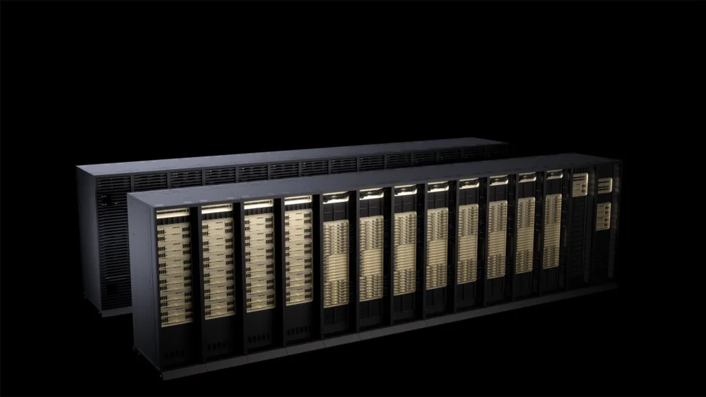
Jan 05, 2026 2026 年 1 月 5 日
Update March 16, 2026: The NVIDIA Vera Rubin platform now has a seventh chip. Learn more about NVIDIA Groq 3 LPX: The Low-Latency Inference Accelerator for the NVIDIA Vera Rubin Platform .更新于 2026 年 3 月 16 日：NVIDIA Vera Rubin 平台现已拥有第七颗芯片。了解更多关于 NVIDIA Groq 3 LPX：适用于 NVIDIA Vera Rubin 平台的低延迟推理加速器。
AI has entered an industrial phase.
人工智能已进入工业化阶段。
What began as systems performing discrete AI model training and human-facing inference has evolved into always-on AI factories that continuously convert power, silicon, and data into intelligence at scale. These factories now underpin applications that generate business plans, analyze markets, conduct deep research, and reason across vast bodies of knowledge.
从最初执行离散 AI 模型训练和面向人类推理的系统，演变为全天候运行的 AI 工厂，持续大规模地将电力、芯片和数据转化为智能。这些工厂如今支撑着生成商业计划、分析市场、进行深度研究以及在庞大数据体系中推理的应用。
To deliver these capabilities at scale, next generation AI factories must process hundreds of thousands of input tokens to provide the long-context required for agentic reasoning, complex workflows, and multimodal pipelines, while sustaining real-time inference under constraints on power, reliability, security, deployment velocity, and cost.
为大规模实现这些能力，下一代 AI 工厂必须处理数十万输入令牌，以提供智能体推理、复杂工作流和多模态流水线所需的长期上下文，同时在功率、可靠性、安全性、部署速度和成本约束下维持实时推理。
The NVIDIA Vera Rubin platform was designed specifically for this new reality.
NVIDIA Vera Rubin 平台专为这一全新现实而设计。
Extreme co-design is the foundation of the Vera Rubin platform. GPUs, CPUs, networking, security, software, power delivery, and cooling are architected together as a single system rather than optimized in isolation. By doing so, the Vera Rubin platform treats the data center, not a single GPU server, as the unit of compute. This approach establishes a new foundation for producing intelligence efficiently, securely, and predictably at scale. It ensures that performance and efficiency hold up in production deployments, not just isolated component benchmarks.
极限协同设计是 Vera Rubin 平台的基石。GPU、CPU、网络、安全、软件、供电和冷却系统被作为一个整体系统进行架构设计，而非单独优化。通过这种方式，Vera Rubin 平台将数据中心而非单个 GPU 服务器视为计算单元。这种方法为大规模高效、安全、可预测地产生智能奠定了新基础。它确保了性能与效率在实际生产部署中得以保持，而不仅仅是孤立的组件基准测试。
This technical deep dive explains why AI factories demand a new architectural approach; how NVIDIA Vera Rubin NVL72 functions as a rack-scale architecture; and how the Vera Rubin platform’s silicon, software, and systems translate into sustained performance and lower cost per token at scale.
本篇技术深度解析阐述了为何 AI 工厂需要全新的架构方法；NVIDIA Vera Rubin NVL72 如何作为机架级架构运行；以及 Vera Rubin 平台的芯片、软件和系统如何转化为持续性能提升和更低的大规模单 token 成本。
The blog is organized as follows:
本博文组织结构如下：
- Why AI factories need a new platform: The shift to reasoning-driven, always-on AI and the constraints that now define scale: power, reliability, security, and speed of deployment.
为何 AI 工厂需要新平台：转向以推理为驱动、始终在线的人工智能，以及如今定义规模化扩展的约束条件：功耗、可靠性、安全性以及部署速度。 - Meet the NVIDIA Vera Rubin platform: The rack-scale platform thesis and the core breakthroughs that enable sustained intelligence production.
认识 NVIDIA Vera Rubin 平台：机架级平台架构及实现持续智能生产的关键突破。 - Six new chips, one AI supercomputer: The six-chip architecture and how GPUs, CPUs, networking, and infrastructure operate as one tightly integrated system.
六款新芯片，一台 AI 超级计算机：六芯片架构及 GPU、CPU、网络和基础设施如何作为一个紧密集成的系统协同运作。 - From chips to systems: NVIDIA Vera Rubin superchip to DGX SuperPOD: How Vera Rubin scales from superchips to racks to NVIDIA DGX SuperPOD-scale AI factory deployments.
从芯片到系统：从 NVIDIA Vera Rubin 超级芯片到 DGX SuperPOD——Vera Rubin 如何从超级芯片扩展至机架，再到 NVIDIA DGX SuperPOD 级别的 AI 工厂部署。 - Software and developer experience: The software stack that makes rack-scale programmable, from NVIDIA CUDA and NVIDIA CUDA-X to training and inference frameworks.
软件与开发者体验：使机架级可编程的软件栈，涵盖 NVIDIA CUDA、NVIDIA CUDA-X 以及训练与推理框架。 - Operating at AI factory scale: The production foundations: operations, reliability, security, energy efficiency, and ecosystem readiness.
在 AI 工厂规模下运行：运营、可靠性、安全性、能效和生态系统就绪性的生产基础。 - Performance and efficiency at scale: How Vera Rubin converts architecture into real gains at scale, including one-fourth as many GPUs to train, 10x higher inference throughput, and 10x lower cost per token.
规模下的性能与效率：Vera Rubin 如何将架构转化为大规模下的实际增益，包括仅需四分之一数量的 GPU 进行训练、10 倍更高的推理吞吐量以及每 token 成本降低 10 倍。 - Why Vera Rubin is the AI factory platform: How extreme co-design delivers predictable performance, economics, and scalability in real deployments.
为何 Vera Rubin 是 AI 工厂平台：极致协同设计如何在真实部署中实现可预测的性能、经济性和可扩展性。
1. Why AI factories need a new platform1. 为什么 AI 工厂需要新平台
AI factories differ fundamentally from traditional data centers. Rather than serving intermittent, human-driven requests, they function as always-on intelligence production systems, where efficiency in reasoning, context handling, and data movement, not just the peak compute of a server, determines performance.
AI 工厂与传统数据中心有着根本区别。它们并非响应间歇性的人工驱动请求，而是作为全天候运行的智能生产系统，其性能取决于推理、上下文处理和数据移动的效率，而非仅凭服务器的峰值算力。
Modern AI workloads increasingly rely on reasoning and agentic models that execute multi-step inference over extremely long contexts. These workloads simultaneously stress every layer of the platform: delivered compute performance, GPU-to-GPU communication, interconnect latency, memory bandwidth and capacity, utilization efficiency, and power delivery. Even small inefficiencies, when multiplied across trillions of tokens, undermine optimal cost, throughput, and competitiveness.
现代 AI 工作负载日益依赖推理和智能体模型，这些模型需要在极长的上下文中执行多步推理。此类工作负载同时给平台的每一层带来压力：递送的计算性能、GPU 间通信、互连延迟、内存带宽与容量、利用效率以及供电能力。即便是微小的低效，当乘以数万亿个令牌时，也会损害最优成本、吞吐量和竞争力。
This dynamic is captured by three scaling laws driving AI progress:
这一动态被推动 AI 进步的三个扩展定律所概括：
- Pre-training scaling: where models learn their inherent knowledge
预训练扩展：模型在此阶段学习其固有知识 - Post-training scaling: where models learn to think through fine-tuning and reinforcement
训练后扩展：模型通过微调和强化学习学会思考 - Test-time scaling: where models reason by generating more tokens during inference
测试时扩展：模型在推理过程中通过生成更多 token 进行推理
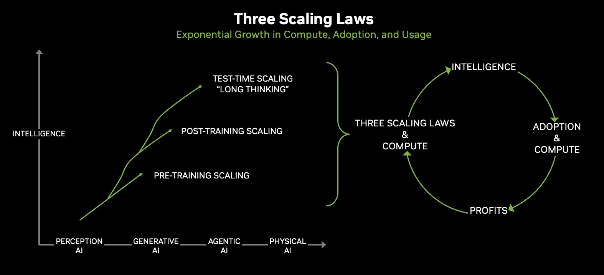
As these scaling laws compound, infrastructure requirements intensify. NVIDIA Blackwell NVL72 was the first rack-scale architecture, freeing GPUs, CPUs, and interconnects from the confines of the traditional server boundary and elevating the rack to the primary unit of integration. This shift enabled major advances in scale-up bandwidth, efficiency, and deployability, and underpins many of today’s largest AI deployments.
随着这些扩展定律的叠加，基础设施需求日益增强。NVIDIA Blackwell NVL72 作为首款机架级架构，将 GPU、CPU 和互连技术从传统服务器的边界中解放出来，使机架成为集成的基本单元。这一转变在纵向扩展带宽、效率和可部署性方面实现了重大突破，为当今众多最大规模的人工智能部署提供了基础支撑。
As AI factories are pushed to deliver more intelligence, lower cost per token, and greater business impact, there is relentless demand to extend rack-scale performance while maintaining data-center-scale determinism within tightly constrained power and cooling limits.
随着 AI 工厂被推动以提供更多智能、更低的每 token 成本和更大的业务影响，在严格限制的功耗和冷却范围内，扩展机架级性能同时保持数据中心级确定性的需求变得永无止境。
2. Meet the NVIDIA Vera Rubin platform2. 认识 NVIDIA Vera Rubin 平台
The NVIDIA Vera Rubin platform was designed for the shift in how intelligence is produced at scale, applying extreme co-design across compute, networking, power delivery, cooling, and system architecture to enable sustained intelligence production at AI factory scale.
NVIDIA Vera Rubin 平台专为智能生产大规模转变而设计，在计算、网络、供电、冷却和系统架构上采用了极致的协同设计，以实现 AI 工厂规模的持续智能生产。
At the platform level, Vera Rubin delivers five generational breakthroughs:
在平台层面，Vera Rubin 实现了五次代际突破：
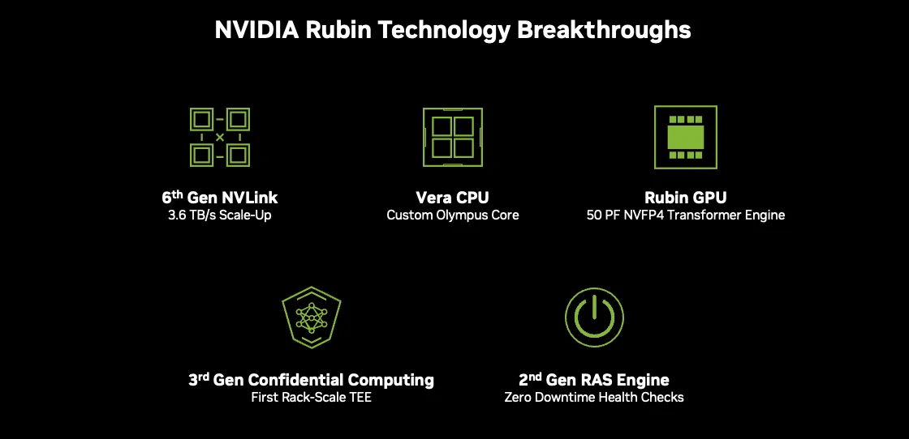
Together, these capabilities allow Rubin-based systems to behave as predictable, secure, continuously available units of intelligence production rather than collections of independent components.
这些能力共同使基于 Rubin 的系统能够作为可预测、安全、持续可用的智能生产单元运行，而非独立组件的集合。
The flagship of the Vera Rubin platform is the Vera Rubin NVL72 rack-scale system, engineered so that the entire rack operates as one rack-scale accelerator within a larger AI factory. The NVL72 system is optimized not just for peak performance, but for sustained intelligence production: predictable latency, high utilization across heterogeneous execution phases, and efficient conversion of power into usable intelligence.
Vera Rubin 平台的旗舰产品是 Vera Rubin NVL72 机架级系统，其设计使整个机架在更大的 AI 工厂中作为一个机架级加速器运行。NVL72 系统不仅针对峰值性能进行了优化，更着眼于持续智能生产：可预测的延迟、异构执行阶段的高利用率，以及将功率高效转化为可用智能。
![Annotated product graphic of the NVIDIA Vera Rubin NVL72 compute tray shown on a black background, presenting a modular compute engine designed for AI factories. The image highlights two Vera Rubin Superchips, NVLink 6 spine connectors, along with integrated BlueField-4 DPUs and ConnectX-9 SuperNICs. Callouts identify major components including the superchips, networking interfaces, and liquid-cooled chassis. A feature list emphasizes 200 petaFLOPS of NVFP4 AI performance per tray, 14.4 TB/s of NVLink 6 bandwidth, 2 TB of fast memory, 800 Gb/s BlueField DPU capability, 1.6 Tb/s of ConnectX-9 SuperNIC bandwidth per GPU, and a fully liquid-cooled design optimized for large-scale AI factory deployments.](../assets/network-asset-Figure-3-new-png-20260521115831-dys1n1u.webp "Figure 3. Vera Rubin NVL72 overview 图 3. Vera Rubin NVL72 概览")
workloads. 工作负载。
To help visualize how the Vera Rubin platform comes together as a unified system, the following video provides an overview of the rack-scale architecture and how each major component plays in sustained intelligence production.
为了帮助可视化 Vera Rubin 平台如何作为一个统一系统组合在一起，以下视频概述了机架级架构以及每个主要组件在持续智能生产中扮演的角色。
Video 1. NVIDIA Vera Rubin platform overview video视频 1. NVIDIA Vera Rubin 平台概述视频
This system-level overview sets the foundation for understanding how the Vera Rubin platform’s chips have been architected to operate as one AI supercomputer.
这一系统级概述为理解 Vera Rubin 平台的芯片如何被设计成一个 AI 超级计算机奠定了基础。
3. Six new chips, one AI supercomputer3. 六款新芯片，一个 AI 超级计算机
Extreme co-design is expressed most clearly at the chip level.
极致的协同设计在芯片层面体现得最为明显。
The Vera Rubin platform is built from six new chips, each engineered for a specific role in the AI factory and designed from the outset to operate as part of a unified rack-scale system. Rather than treating compute, networking, and infrastructure as loosely coupled layers, Vera Rubin integrates them directly into the architecture. It ensures that communication, coordination, security, and efficiency are first-class design considerations.
Vera Rubin 平台由六款新芯片构建而成，每款芯片都针对 AI 工厂中的特定角色进行设计，并且从一开始就作为统一机架级系统的一部分运行。Vera Rubin 没有将计算、网络和基础设施视为松散耦合的层级，而是将它们直接集成到架构中。这确保了通信、协调、安全性和效率成为一流的设计考量。
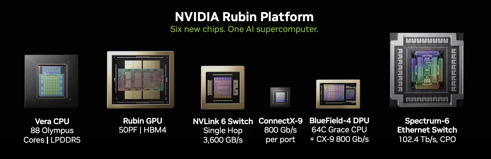
The six new chips are:
这六款新芯片分别是：
- NVIDIA Vera CPU: 88 NVIDIA custom-designed Olympus cores optimized for the next generation of AI factories with full Arm-compatibility.
NVIDIA Vera CPU：88 个 NVIDIA 定制设计的 Olympus 核心，针对下一代 AI 工厂进行了优化，并全面兼容 Arm 架构。 - NVIDIA Rubin GPU: High-performance AI compute with HBM4 and new NVIDIA Transformer Engine.
NVIDIA Rubin GPU：高性能 AI 计算，配备 HBM4 和新一代 NVIDIA Transformer Engine。 - NVIDIA NVLink 6 switch: Sixth-generation scale-up fabric delivering 3.6 TB/s GPU-to-GPU bandwidth.
NVIDIA NVLink 6 交换机：第六代扩展互联架构，提供 3.6 TB/s 的 GPU 到 GPU 带宽。 - NVIDIA ConnectX-9: High-throughput, low-latency networking interface at the endpoint for scale-out AI.
NVIDIA ConnectX-9：面向横向扩展 AI 的高吞吐量、低延迟端点网络接口。 -
NVIDIA BlueField-4 data processing unit (DPU) : A dual-die package combining:
NVIDIA BlueField-4 数据处理单元（DPU）：一个双芯片封装，结合了： -
A 64-core NVIDIA Grace CPU for infrastructure offload and security.
一个 64 核 NVIDIA Grace CPU，用于基础设施卸载和安全。 - An integrated NVIDIA ConnectX-9 high-speed networking chip for tightly coupled data movement.
一个集成的 NVIDIA ConnectX-9 高速网络芯片，用于紧密耦合的数据移动。 - NVIDIA Spectrum-6 Ethernet switch: Scale-out connectivity using co-packaged optics for efficiency and reliability.
NVIDIA Spectrum-6 以太网交换机：采用共封装光学技术实现高效可靠的横向扩展连接。
Together, these chips form a synchronized architecture in which GPUs execute transformer-era workloads, CPUs orchestrate data and control flow, scale-up and scale-out fabrics move tokens and state efficiently, and dedicated infrastructure processors operate and secure the AI factory itself.
这些芯片共同构成一个同步架构，其中 GPU 执行 Transformer 时代的工作负载，CPU 协调数据与控制流，横向扩展与纵向扩展结构高效传输 Token 和状态，专用基础设施处理器则负责运行并保护 AI 工厂本身。
In the sections that follow, we examine each of these building blocks in detail, starting with the Vera CPU, which orchestrates data movement, memory, and control flow to sustain GPU utilization at AI factory scale.
在接下来的章节中，我们将逐一详细剖析这些构建模块，首先从 Vera CPU 开始——它在 AI 工厂规模下负责协调数据移动、内存及控制流，以维持 GPU 的高利用率。
Vera CPU: Purpose-built for AI factoriesVera CPU：专为 AI 工厂打造
As AI factories scale, GPU performance alone is no longer sufficient to sustain throughput. High utilization across thousands of GPUs depends on how efficiently data, memory, and control flow through the system. The Vera CPU is designed specifically for this role, acting as the high-bandwidth, low-latency data movement engine that keeps AI factories operating efficiently at scale.
随着 AI 工厂的规模化，仅靠 GPU 性能已不足以维持吞吐量。数千块 GPU 的高利用率取决于数据、内存和控制流在系统中的传输效率。Vera CPU 正是为此角色而设计，作为高带宽、低延迟的数据移动引擎，确保 AI 工厂在规模化下高效运行。
Rather than functioning as a traditional general-purpose host, Vera is optimized for orchestration, data movement, and coherent memory access across the rack. Paired with Rubin GPUs as a host CPU, or deployed as a standalone platform for agentic processing, Vera enables higher sustained utilization by removing CPU-side bottlenecks that emerge in training and inferencing environments.
Vera 并非作为传统通用主机运行，而是针对跨机架的编排、数据移动和一致性内存访问进行了优化。作为 Rubin GPU 的配套主机 CPU，或作为独立平台部署用于智能体处理，Vera 通过消除训练和推理环境中出现的 CPU 侧瓶颈，实现了更高的持续利用率。
![Product graphic showing the NVIDIA Vera CPU on a black background, with a close-up view of the CPU package and exposed die on the left and key architectural features listed on the right. The Vera CPU is described as built for data movement and agentic processing, featuring 88 NVIDIA custom Olympus CPU cores with 176 threads using NVIDIA spatial multithreading, 1.8 TB/s NVLink-C2C bandwidth enabling coherent CPU-GPU memory, and 1.5 TB of system memory using power-efficient SOCAMM LPDDR5X. Additional highlights include second-generation NVIDIA SCF fabric and deterministic, low-latency data movement optimized for next-generation AI systems.](../assets/network-asset-Figure-5-new-png-20260521115831-z994qty.webp "Figure 5. Vera CPU with NVIDIA-built custom cores")
From NVIDIA Grace to Vera—scaling the CPU for AI factories
NVIDIA Grace established NVIDIA’s approach to high-bandwidth, energy-efficient CPU design. Vera extends that foundation with increased core density, significantly higher memory bandwidth, expanded coherency, and full confidential computing support, all tailored for AI factory workloads.
As shown in the table below, Vera delivers 2.4x higher memory bandwidth and 3x greater memory capacity to support data-intensive workloads, while doubling NVLink-C2C bandwidth to sustain coherent CPU–GPU operation at rack scale. Together, these advances elevate the CPU from a supporting role to a key enabler of next-generation GPU efficiency in AI factories.
| Feature 功能 | Grace CPU | Vera CPU |
|---|---|---|
| Cores 核心 | 72 Neoverse V2 cores 72 个 Neoverse V2 核心 |
88 NVIDIA Custom Olympus cores 88 个 NVIDIA 定制 Olympus 核心 |
| Threads 线程 | 72 | 176 Spatial Multithreading 176 个空间多线程 |
| L2 Cache per core 每个核心的 L2 缓存 | 1 MB | 2 MB |
| Unified L3 Cache 统一 L3 缓存 | 114 MB | 164 MB |
| Memory bandwidth (BW) 内存带宽（BW） | Up to 512GB/s 高达 512GB/s | Up to 1.2TB/s 高达 1.2TB/s |
| Memory capacity 内存容量 | Up to 480GB LPDDR5X 最高可达 480GB LPDDR5X | Up to 1.5TB LPDDR5X 最高可达 1.5TB LPDDR5X |
| SIMD | 4x 128b SVE2 4x 128 位 SVE2 | 6x 128b SVE2 FP8 6x 128b SVE2 FP8 |
| NVLINK-C2C | 900 GB/s | 1.8 TB/s |
| PCIe/CXL | Gen5 第五代 | Gen6/CXL 3.1 第六代/CXL 3.1 |
| Confidential compute 机密计算 | NA | Supported 支持 |
Table 1. Grace vs. Vera CPU comparison表 1. Grace 与 Vera CPU 对比
NVIDIA Olympus core with Spatial Multithreading带有空间多线程的 NVIDIA Olympus 核心
At the heart of the Vera CPU are 88 NVIDIA custom Olympus cores, designed for high single-thread performance and energy efficiency with full Arm-compatibility. The cores employ a wide, deep microarchitecture with improved branch prediction, prefetching, and load-store performance, optimized for control-heavy and data-movement-intensive workloads.
Vera CPU 的核心是 88 个 NVIDIA 定制 Olympus 核心，专为高单线程性能和能效设计，同时完全兼容 Arm 架构。这些核心采用宽而深的微架构，具备改进的分支预测、预取和加载存储性能，针对控制密集型和数据移动密集型工作负载进行了优化。
Vera introduces Spatial Multithreading, a new type of multithreading that runs two hardware threads per core by physically partitioning resources instead of time-slicing, enabling a run-time tradeoff between performance and efficiency. This approach increases throughput and virtual CPU density while maintaining predictable performance and strong isolation, a critical requirement for multi-tenant AI factories
Vera 引入了空间多线程，一种新型的多线程技术，通过物理分区资源而非时间分片，使每个核心运行两个硬件线程，从而实现运行时在性能与效率之间的权衡。这种方法提高了吞吐量和虚拟 CPU 密度，同时保持可预测的性能和强隔离性，这是多租户 AI 工厂的关键需求。
Scalable Coherency Fabric—deterministic data movement可扩展一致性结构——确定性数据移动
The second-generation NVIDIA Scalable Coherency Fabric (SCF) connects all 88 Olympus cores to a shared L3 cache and memory subsystem on a single monolithic compute die. By avoiding chiplet boundaries, SCF delivers consistent latency and sustains over 90% of peak memory bandwidth under load, eliminating bottlenecks between cores and memory controllers.
第二代 NVIDIA 可扩展一致性结构(SCF)将全部 88 个 Olympus 核心连接到一个共享的 L3 缓存和内存子系统，位于单个单片计算芯片上。通过避免芯片间边界，SCF 提供一致的延迟，并在负载下保持超过 90%的峰值内存带宽，消除了核心与内存控制器之间的瓶颈。
By providing deterministic, high-throughput data movement across the CPU, SCF ensures that orchestration and data-processing workloads scale linearly as core count increases. This is essential for keeping GPUs fed with data and commands at AI factory scale.
通过在 CPU 上提供确定性的高吞吐量数据移动，SCF 确保编排和数据处理工作负载随着核心数量的增加而线性扩展。这对于在 AI 工厂规模下保持向 GPU 提供数据和命令至关重要。
Memory bandwidth and coherent execution内存带宽和一致性执行
Vera pairs SCF with up to 1.5TB of LPDDR5X memory subsystem, delivering up to 1.2 TB/s of bandwidth at low power. Small Outline Compression Attached Memory Modules (SOCAMM) with LPDDR5X improve serviceability and fault isolation, improving AI factory uptime requirements.
Vera 将 SCF 与高达 1.5TB 的 LPDDR5X 内存子系统配对，以低功耗提供高达 1.2 TB/s 的带宽。采用 LPDDR5X 的小型压缩附加内存模块（SOCAMM）提升了可维护性和故障隔离能力，从而满足 AI 工厂的持续运行需求。
Second-generation NVLink-C2C provides 1.8 TB/s of coherent bandwidth between Vera CPUs and Rubin GPUs, enabling a unified address space across CPU and GPU memory. Applications can treat LPDDR5X and HBM4 as a single coherent pool, reducing data movement overhead and enabling techniques such as KV-cache offload and efficient multi-model execution.
第二代 NVLink-C2C 在 Vera CPU 和 Rubin GPU 之间提供 1.8 TB/s 的一致性带宽，实现了 CPU 与 GPU 内存的统一地址空间。应用程序可将 LPDDR5X 和 HBM4 视为一个统一的一致性内存池，从而减少数据移动开销，并支持 KV-cache 卸载与高效多模型执行等技术。
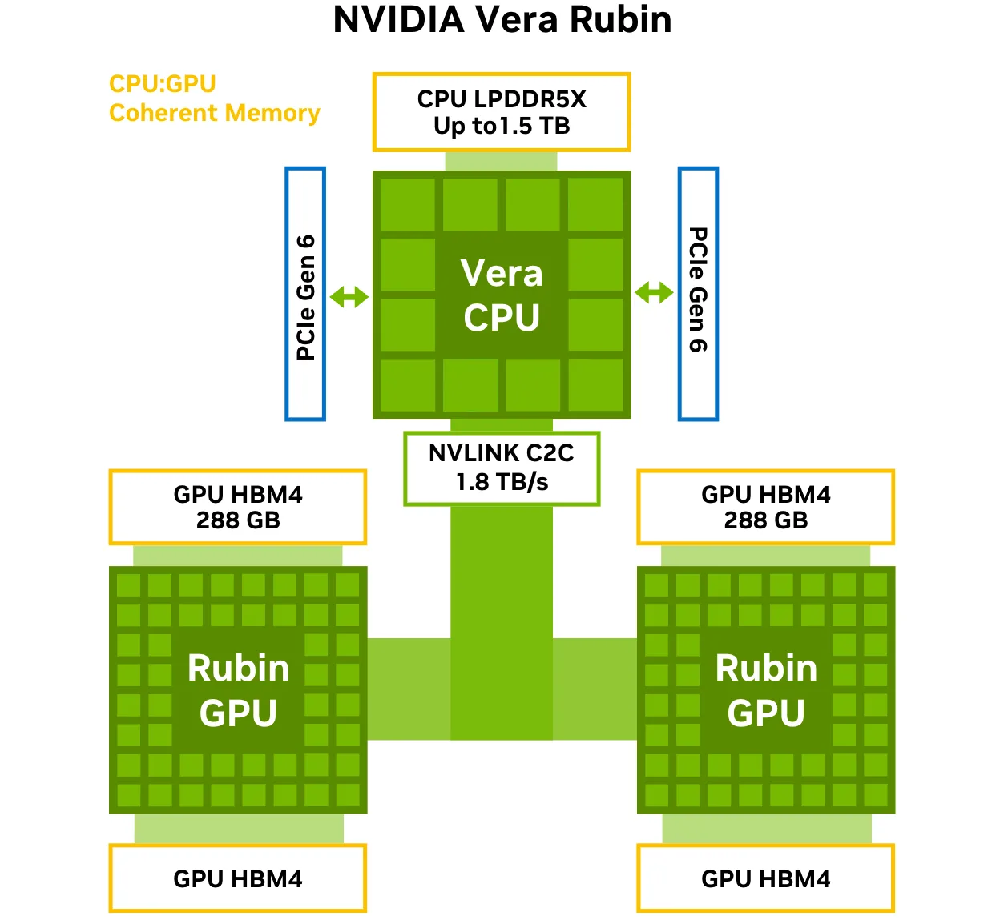
Software compatibility and secure operation 软件兼容性与安全运行
Vera supports the Arm v9.2 architecture and integrates seamlessly with the Arm software ecosystem. Major Linux distributions, AI frameworks, and orchestration platforms run unmodified, allowing existing infrastructure software to scale onto Vera-based systems without disruption.
Vera 支持 Arm v9.2 架构，并与 Arm 软件生态系统无缝集成。主流 Linux 发行版、AI 框架和编排平台均可直接运行，无需修改，使现有基础设施软件能够无中断地扩展到基于 Vera 的系统上。
Confidential computing is supported natively, enabling secure execution across CPU–GPU boundaries and across multi-socket configurations while preserving performance.
机密计算原生支持，可在 CPU 与 GPU 之间以及多插槽配置中实现安全执行，同时保持性能不受影响。
The data engine for AI factoriesAI 工厂的数据引擎
Vera is a purpose-built CPU engineered to keep GPUs fully utilized by efficiently moving, processing, and coordinating data at AI factory scale. Rather than acting as a passive host, Vera functions as a data engine that accelerates control-heavy and communication-intensive paths, including data staging, scheduling, orchestration, and agentic workflows. It also delivers exceptional standalone performance for analytics, cloud, storage, and infrastructure services.
Vera 是一款专为 GPU 设计的 CPU，旨在通过高效移动、处理和协调数据，在 AI 工厂规模下保持 GPU 的充分利用。它并非作为被动主机，而是作为数据引擎运行，加速控制密集型和通信密集型路径，包括数据暂存、调度、编排和代理工作流。同时，它在分析、云、存储和基础设施服务方面也提供了卓越的独立性能。
By combining Olympus CPU cores, second-generation SCF, high-bandwidth LPDDR5X memory, and coherent NVLink-C2C connectivity, Vera ensures Rubin GPUs remain productive across training, post-training, and inference workloads, even as execution shifts between compute, memory, and communication-dominated phases.
通过结合 Olympus CPU 核心、第二代 SCF、高带宽 LPDDR5X 内存以及一致性 NVLink-C2C 连接，Vera 确保了 Rubin GPU 在训练、后训练和推理工作负载中始终保持高效，即使执行过程在计算、内存和通信主导的阶段之间切换。
In the next section, we examine the Rubin GPU, the execution engine that transforms this rack-scale accelerator foundation into sustained training and inference performance.
在下一节中，我们将探讨 Rubin GPU，这个执行引擎将这一机架级加速器基础转化为持续的训练和推理性能。
Rubin GPU: Execution engine for transformer-era AIRubin GPU：Transformer 时代 AI 的执行引擎
With the Vera CPU providing the orchestration and data-movement foundation, the Rubin GPU serves as the execution engine that turns rack-scale capability into intelligence. It is designed for continuous training, post-training, and inference in always-on AI factories.
随着 Vera CPU 提供编排和数据移动基础，Rubin GPU 作为执行引擎，将机架级能力转化为智能。它专为持续训练、后训练以及在始终在线的 AI 工厂中进行推理而设计。
Modern AI workloads—including reasoning, mixture-of-experts (MoE), long-context inference, and reinforcement learning—are not limited by peak floating point operations (FLOPS) alone. They are constrained by whether execution efficiency can be sustained across compute, memory, and communication. The Rubin GPU is purpose-built for this reality, optimizing the full execution path that turns power, bandwidth, and memory into tokens at scale.
现代 AI 工作负载——包括推理、混合专家（MoE）、长上下文推理和强化学习——并不仅仅受峰值浮点运算（FLOPS）的限制。它们受到计算、内存和通信之间能否持续执行效率的约束。Rubin GPU 正是为此而设计，优化了整个执行路径，将电力、带宽和内存大规模转化为 token。
To sustain throughput under these conditions, the Rubin GPU advances its architecture across three tightly coupled dimensions: compute density, memory bandwidth, and rack-scale communication.
为在这些条件下维持吞吐量，Rubin GPU 从三个紧密关联的维度推进其架构：计算密度、内存带宽和机架级通信。
![Product graphic presenting the NVIDIA Rubin GPU on a black background, with a detailed die visualization on the left and key performance specifications listed on the right. The Rubin GPU is described as built for the next generation of AI, delivering 50 PFLOPS of NVFP4 inference performance, 35 PFLOPS of NVFP4 training performance, 22 TB/s of HBM4 memory bandwidth, and 3.6 TB/s of NVLink bandwidth per GPU. The graphic also highlights a 336-billion-transistor design and generational gains versus Blackwell, including up to 5x inference, 3.5x training, 2.8x memory bandwidth, 2x NVLink bandwidth, and 1.6x transistor count, emphasizing scalability for large-scale AI workloads.](../assets/network-asset-image-33-1-20260521115831-kqqybrv.png "Figure 7. Rubin GPU 图 7. Rubin GPU")
At the silicon level, Rubin builds on NVIDIA’s proven GPU foundation while scaling every critical subsystem for transformer-era workloads. The GPU integrates 224 Streaming Multiprocessors (SMs) equipped with fifth-generation Tensor Cores optimized for low-precision NVFP4 and FP8 execution. These Tensor Cores are tightly coupled with expanded Special Function Units (SFUs) and execution pipelines designed to accelerate attention, activation, and sparse compute paths common in modern AI models.
在芯片层面，Rubin 在 NVIDIA 成熟的 GPU 基础上构建，同时扩展了每个关键子系统以应对 Transformer 时代的工作负载。该 GPU 集成了 224 个流式多处理器（SM），配备专为低精度 NVFP4 和 FP8 执行优化的第五代 Tensor Core。这些 Tensor Core 与扩展的特殊函数单元（SFU）及执行流水线紧密耦合，旨在加速现代 AI 模型中常见的注意力、激活和稀疏计算路径。
Building on NVIDIA Blackwell, Rubin extends NVIDIA’s extreme hardware–software co-design to deliver higher sustained throughput and lower cost per token across training, post-training, and inference workloads. Improved NVFP4 support increases arithmetic density and efficiency, allowing more useful computation per watt while maintaining model accuracy. By integrating low-precision execution deeply into both the architecture and software stack, Rubin translates advances in numerical formats directly into real-world gains in throughput, utilization, and AI factory economics.
在 NVIDIA Blackwell 的基础上，Rubin 进一步扩展了 NVIDIA 极致的软硬件协同设计，在训练、后训练和推理工作负载中实现更高的持续吞吐量和更低的每 token 成本。改进后的 NVFP4 支持提升了算术密度和效率，使得每瓦特能进行更多有效计算，同时保持模型精度。通过将低精度执行深度集成到架构和软件栈中，Rubin 直接将数值格式的进步转化为吞吐量、利用率和 AI 工厂经济效益的实际提升。
Across the full device, Rubin delivers a step-function increase in sustained throughput across pre-training, post-training, and inference. By increasing scale-up bandwidth, improving collective efficiency, and sustaining higher utilization under communication-heavy execution, Rubin raises the effective performance ceiling for large-scale training while delivering significant gains in post-training and inference workflows.
在整个设备中，Rubin 在预训练、后训练和推理阶段实现了持续吞吐量的阶跃式提升。通过增加扩展带宽、提高集合通信效率，并在通信密集型执行中保持更高利用率，Rubin 提升了大规模训练的有效性能上限，同时在后训练和推理工作流中带来显著增益。
Sustained compute and execution scaling持续计算与执行扩展
Rubin scales compute capability, Transformer Engine support, and execution balance together to avoid the utilization cliffs that limit real-world throughput.
Rubin 同时扩展计算能力、Transformer Engine 支持和执行平衡，以避免限制实际吞吐量的利用率悬崖。
The table below highlights how core compute characteristics have evolved since Blackwell. Additional Rubin compute specifications can be found on the Vera Rubin NVL72 product page.
下表重点介绍了自 Blackwell 以来核心计算特性的演变。更多 Rubin 计算规格可在 Vera Rubin NVL72 产品页面上找到。
| Feature 功能 | Blackwell | Rubin |
|---|---|---|
| Transistors (full chip) 晶体管（全芯片） | 208B | 336B |
| Compute dies 计算晶片 | 2 | 2 |
| NVFP4 inference (PFLOPS) NVFP4 推理（PFLOPS） | 10 | 50* |
| NVFP4 training (PFLOPS) NVFP4 训练（PFLOPS） | 10 | 35** |
| Softmax acceleration (SFU EX2 Ops/Clk/SM for Softmax 加速（SFU EX2 操作/时钟/流多处理器用于 FP32 | FP16) |
16 | 32 | 64 |
Table 2. NVIDIA GPU compute capability comparison表 2. NVIDIA GPU 计算能力对比 Transformer Engine compute* Dense compute
Converging AI and scientific computing
The launch of the NVIDIA Vera Rubin platform marks a new phase in scientific computing, where AI and simulation increasingly reinforce one another. In many supercomputing environments today, simulations are treated as endpoints—computationally intensive runs that produce a single result. Increasingly, high-fidelity simulations are also used as engines for dataset generation, producing training data for AI models that augment traditional solvers.
These AI models can act as intelligent pre-conditioners, accelerate convergence, or serve as fast surrogate models in iterative workflows. While AI surrogates can deliver dramatic speedups—sometimes with reduced precision—classical simulation remains essential for establishing ground truth and final validation. The result is a converging workload profile that demands strong performance across both AI and scientific computing.
The table below compares the FP32 and FP64 compute capability of the NVIDIA Hopper, Blackwell, and Rubin GPUs.
| Feature 功能 | Hopper GPU | Blackwell GPU | Rubin GPU |
|---|---|---|---|
| FP32 vector (TFLOPS) FP32 向量（TFLOPS） | 67 | 80 | 130 |
| FP32 matrix (TFLOPS) FP32 矩阵 (TFLOPS) | 67 | 227* | 400* |
| FP64 vector (TFLOPS) FP64 向量（TFLOPS） | 34 | 40 | 33 |
| FP64 matrix (TFLOPS) FP64 矩阵（TFLOPS） | 67 | 150* | 200* |
Table 3. NVIDIA GPU FP32 and FP64 compute capability. 表 3. NVIDIA GPU FP32 和 FP64 计算能力
Peak performance using Tensor Core-based emulation algorithms使用基于 Tensor Core 的仿真算法时的峰值性能
The matrix performance shown above is achieved through a combination of architectural enhancements and software techniques that deliver higher effective throughput relative to prior generations. This reflects NVIDIA’s continued focus on application-level performance rather than isolated peak metrics.
以上矩阵性能是通过架构增强和软件技术的结合实现的，相比前代产品提供了更高的有效吞吐量。这体现了 NVIDIA 持续关注应用级性能而非孤立的峰值指标。
Across both AI and scientific computing, the NVIDIA extreme co-design philosophy prioritizes sustained performance on real workloads. Analysis of production simulation codes shows that the highest sustained FP64 performance often comes from matrix-multiply kernels. Hopper used dedicated hardware to accelerate these paths. With Blackwell and now Rubin, NVIDIA has evolved this strategy, achieving high FP64 matrix throughput via multiple passes over lower-precision tensor cores while preserving architectural flexibility for converged workloads. More information on how Ozaki FP64 emulation is an effective way to achieve true FP64-level accuracy on low-precision AI hardware while delivering impressive performance gains can be found in our blog on Unlocking Tensor Core Performance with Floating Point Emulation in cuBLAS.
在人工智能和科学计算领域，NVIDIA 的极致协同设计理念优先保障实际工作负载的持续性能。对生产级仿真代码的分析表明，最高的持续 FP64 性能通常来自矩阵乘法内核。Hopper 使用专用硬件加速这些路径。从 Blackwell 到如今的 Rubin，NVIDIA 已演进这一策略：通过对低精度张量核心进行多次遍历来实现高 FP64 矩阵吞吐量，同时为融合工作负载保留架构灵活性。关于如何通过浮点模拟在低精度 AI 硬件上有效实现真正的 FP64 精度并带来显著性能提升的更多信息，可参阅我们关于《利用 cuBLAS 中的浮点模拟释放张量核心性能》的博客。
At the same time, dedicated FP64 vector performance remains critical for scientific applications that are not dominated by matrix kernels. In these cases, performance is constrained by data movement through registers, caches, and high-bandwidth memory (HBM) rather than raw compute. A balanced GPU design therefore provisions sufficient FP64 resources to saturate available memory bandwidth, avoiding over-allocation of compute capacity that cannot be effectively utilized.
同时，专用的 FP64 向量性能对于不以矩阵核为主科学应用仍然至关重要。在这些场景下，性能受限于数据在寄存器、缓存和高带宽内存（HBM）中的移动，而非原始计算能力。因此，平衡的 GPU 设计会配置足够的 FP64 资源以饱和可用的内存带宽，避免过度分配无法有效利用的计算能力。
With the Vera Rubin platform, real application performance continues to improve each generation. The figure below shows projected gains across representative high-performance computing (HPC) simulation codes, driven by architectural and system-level improvements rather than increases in raw FP64 vector throughput.
随着 Vera Rubin 平台的推出，实际应用性能每一代都在持续提升。下图展示了代表性高性能计算（HPC）模拟代码的预期性能提升，这些提升源于架构和系统层面的改进，而非原始 FP64 向量吞吐量的增加。
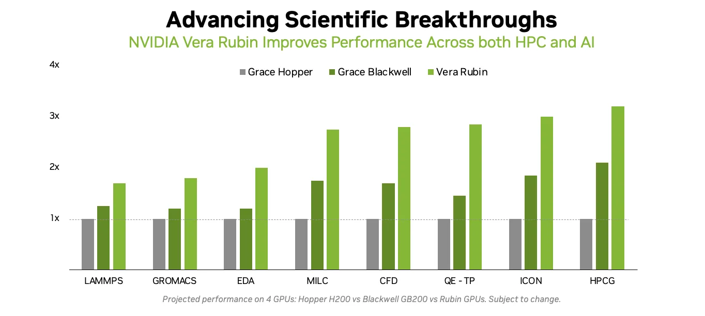
Transformer Engine
The third-generation NVIDIA Transformer Engine builds upon the prior innovations with new hardware-accelerated adaptive compression designed to boost NVFP4 performance while preserving accuracy. This capability enables up to 50 PetaFLOPS NVFP4 for inference 第三代 NVIDIA Transformer Engine 在前代创新基础上，新增了硬件加速的自适应压缩技术，旨在提升 NVFP4 性能的同时保持精度。该技术可实现高达 50 PetaFLOPS 的 NVFP4 推理性能。
Fully compatible with Blackwell GPUs, the new Transformer Engine preserves the existing programming model, allowing previously optimized code to transition seamlessly to Rubin while automatically benefiting from higher arithmetic density and improved execution efficiency.
全新 Transformer Engine 与 Blackwell GPU 完全兼容，保留了现有编程模型，使得之前优化的代码能够无缝迁移至 Rubin，同时自动受益于更高的算术密度和更优的执行效率。
Memory and decode efficiency内存与解码效率
As context lengths grow and inference becomes increasingly interactive, achieved memory performance becomes a dominant factor in overall efficiency. The Rubin GPU incorporates a new generation of high-bandwidth memory, HBM4, which doubles interface width compared to HBM3e.
随着上下文长度增长，推理过程愈发交互化，实际存储性能成为整体效率的主导因素。Rubin GPU 采用新一代高带宽内存 HBM4，其接口宽度较 HBM3e 提升一倍。
Through new memory controllers, deep co-engineering with the memory ecosystem, and tighter compute-memory integration, the Rubin GPU nearly triples memory bandwidth compared to Blackwell.
通过新的内存控制器、与内存生态系统的深度协同工程以及更紧密的计算-内存集成，Rubin GPU 的内存带宽相比 Blackwell 几乎提升了三倍。
Key characteristics include:
关键特性包括：
- Up to 288 GB of HBM4 per GPU
每颗 GPU 最多搭载 288 GB 的 HBM4 高带宽内存 - Aggregate bandwidth of up to 22 TB/s
聚合带宽最高可达 22 TB/s - Improved decode and front-end efficiency to keep execution pipelines fed under load
改进解码和前段效率，确保负载下执行流水线持续高效运行
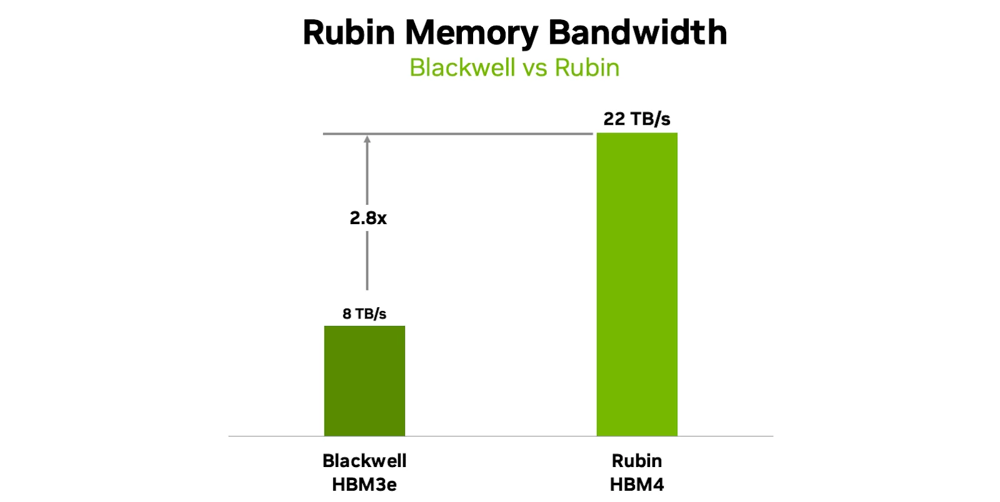
Together, these advances enable the Rubin GPU to sustain long-context inference, high-batch MoE execution, and interactive reasoning without sacrificing concurrency or utilization.
这些进步共同使 Rubin GPU 能够在不牺牲并发性或利用率的情况下，维持长上下文推理、高批量 MoE 执行和交互式推理。
Scale-up interconnect—built for communication-dominated AI扩展互连——专为通信密集型 AI 构建
The Vera Rubin platform supports sixth-generation NVIDIA NVLink (NVLink 6) for GPU-to-GPU communication within the system, NVIDIA NVLink-C2C (chip-to-chip) for coherent CPU-GPU connectivity with Vera CPUs, and PCIe Gen6 for host and device integration.
Vera Rubin 平台支持第六代 NVIDIA NVLink（NVLink 6）用于系统内 GPU 间通信，NVIDIA NVLink-C2C（芯片到芯片）用于与 Vera CPU 的相干 CPU-GPU 连接，以及 PCIe Gen6 用于主机和设备集成。
NVIDIA NVLink 6 delivers 3.6 TB/s of bidirectional GPU-to-GPU bandwidth per GPU, doubling scale-up bandwidth over the prior generation. Within an NVL72 system, this enables all-to-all communication across 72 GPUs with predictable latency, a critical requirement for MoE routing, collectives, and synchronization-heavy inference paths.
NVIDIA NVLink 6 为每个 GPU 提供 3.6 TB/s 的双向 GPU 间带宽，将扩展带宽较上一代翻倍。在 NVL72 系统内，这使得 72 个 GPU 之间能够以可预测的延迟进行全互联通信，这是 MoE 路由、集合通信以及同步密集型推理路径的关键要求。
By eliminating scale-up bottlenecks, the Rubin GPU ensures that communication does not cap utilization as model size, expert count, and reasoning depth increase.
通过消除扩展瓶颈，Rubin GPU 确保随着模型规模、专家数量和推理深度的增加，通信不会成为利用率的天花板。
The table below compares GPU interconnect bandwidth from Blackwell to Rubin.
下表比较了从 Blackwell 到 Rubin 的 GPU 互连带宽。
| Interconnect 互连 | Blackwell 布莱克韦尔 | Rubin 鲁宾 |
|---|---|---|
| NVLink (GPU-GPU)(GB/s, bi-directional) NVLink (GPU 到 GPU)(GB/s, 双向) |
1,800 | 3,600 |
| NVLink-C2C (CPU-GPU)(GB/s, bi-directional) NVLink-C2C (CPU 到 GPU)(GB/s, 双向) |
900 | 1,800 |
| PCIe Interface(GB/s, bi-directional) PCIe 接口（GB/s，双向） |
256 (Gen 6) 256（第 6 代） | 256 (Gen 6) 256（第 6 代） |
Table 4. Interconnect comparison of Blackwell and Rubin表 4. Blackwell 与 Rubin 互连对比
Built for AI factory workloads专为 AI 工厂工作负载而构建
The NVIDIA Rubin GPU is optimized for the workloads that define modern AI factories, where performance is governed less by peak compute and more by sustained efficiency across compute, memory, and communication. These workloads include MoE models dominated by dynamic all-to-all communication, agentic pipelines that interleave reasoning with tool use, and long-running training and post-training workflows that must maintain high utilization over extended periods.
NVIDIA Rubin GPU 针对定义现代 AI 工厂的工作负载进行了优化，这些工作负载的性能更少取决于峰值计算能力，而更多取决于计算、内存和通信方面的持续效率。这些工作负载包括以动态全对全通信为主导的 MoE 模型、将推理与工具使用交替进行的智能体流水线，以及需要在长时间内保持高利用率的长时间训练和训练后工作流程。
By combining adaptive execution with massive scale-up bandwidth, the Vera Rubin platform keeps GPUs productive across all phases of execution, including compute-heavy kernels, memory-intensive attention, and communication-bound expert dispatch, rather than optimizing only for dense matrix math. This is not a point upgrade over prior generations. The Vera Rubin platform rebalances GPU architecture for continuous operation at scale, working in concert with the Vera CPU, NVLink 6 scale-up, and platform software to efficiently convert power and silicon into usable intelligence across the rack.
通过将自适应执行与大规模带宽扩展相结合，Vera Rubin 平台确保 GPU 在执行的所有阶段（包括计算密集型内核、内存密集型注意力机制以及通信受限的专家调度）都能保持高效，而不仅仅针对密集矩阵运算进行优化。这不是对前代产品的简单升级。Vera Rubin 平台重新平衡了 GPU 架构，以实现大规模持续运行，并与 Vera CPU、NVLink 6 扩展和平台软件协同工作，将电能和硅片高效转化为可跨机架使用的智能算力。
In the next section, we examine NVLink 6 switching, the rack-scale fabric that allows 72 GPUs to operate as a single, tightly coupled system.
接下来，我们将探讨 NVLink 6 交换技术——这一机架级结构让 72 颗 GPU 能够作为单一紧密耦合系统运行。
NVLink 6 Switch: The rack-scale scale-up fabricNVLink 6 交换机：机架级纵向扩展结构
At the AI factory scale, communication is key to determining performance. MoE routing, collective operations, synchronization-heavy training, and reasoning inference all depend on fast, predictable all-to-all data movement. When scale-up bandwidth falls short, GPUs sit idle and cost per token rises.
在 AI 工厂规模下，通信是决定性能的关键。MoE 路由、集合通信、高同步训练及推理都依赖于快速、可预测的全对全数据移动。当纵向扩展带宽不足时，GPU 将处于空闲状态，每个 token 的成本也会上升。
NVLink 6 is designed to eliminate this bottleneck. It is the scale-up fabric of the Vera Rubin platform, enabling 72 Rubin GPUs within an NVL72 system to operate as a single, tightly coupled accelerator with uniform latency and sustained bandwidth under communication-dominated workloads.
NVLink 6 专为消除这一瓶颈而设计。它是 Vera Rubin 平台的纵向扩展结构，使 NVL72 系统中的 72 颗 Rubin GPU 能够作为单一紧密耦合加速器运行，在通信密集型工作负载下保持统一延迟和持续带宽。
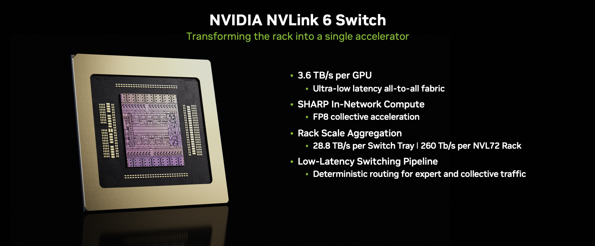
Each Rubin GPU connects to NVLink 6 with 3.6 TB/s of bidirectional bandwidth, doubling per-GPU scale-up bandwidth over the prior generation. NVLink 6 switch trays form a single all-to-all topology across the rack, allowing any GPU to communicate with any other GPU with consistent latency and bandwidth.
每个 Rubin GPU 通过 NVLink 6 连接，双向带宽达 3.6 TB/s，每 GPU 的扩展带宽相比上一代翻倍。NVLink 6 交换机托盘在机架内形成单一的全互联拓扑，使任何 GPU 都能以一致的延迟和带宽与其他 GPU 通信。
This uniform topology removes hierarchical bottlenecks and hop-dependent behavior. From the software perspective, the rack behaves as one large accelerator, simplifying scaling for communication-heavy models.
这种统一拓扑消除了层级瓶颈和跳数相关行为。从软件角度来看，整个机架如同一个大型加速器，简化了通信密集型模型的扩展。
All-to-all scaling for MoE and reasoningMoE 和推理的全互连扩展
Fast MoE training and inference uses expert parallelism (EP), which relies on fine-grained, dynamic routing of tokens across experts that may reside on different GPUs. These patterns generate frequent, bursty communication that overwhelms hierarchical or partially connected fabrics.
快速的 MoE 训练和推理采用专家并行（EP）技术，该技术依赖于对可能位于不同 GPU 上的专家之间进行细粒度、动态的路由。这些模式会产生频繁且突发的通信，从而压垮分层或部分连接的网络结构。
NVLink 6 is deployed as a full all-to-all fabric across the NVL72 system. Expert routing, synchronization, and collectives scale efficiently across all 72 GPUs without saturating links or introducing unpredictable latency.
NVLink 6 在 NVL72 系统中作为全互联网络结构部署。专家路由、同步和集合通信可在全部 72 个 GPU 上高效扩展，而不会使链路饱和或引入不可预测的延迟。
For MoE inference at scale, NVLink 6 delivers up to 2x higher throughput compared to the prior generation for all-to-all operations.
对于大规模 MoE 推理，与前代产品相比，NVLink 6 在全对全操作中的吞吐量提升高达 2 倍。
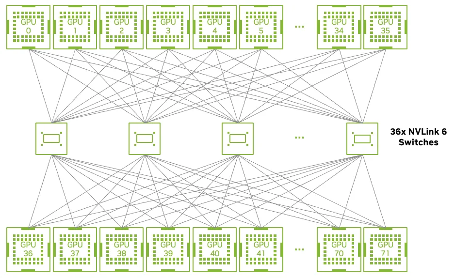
In-network compute for collective operations面向集合操作的在网计算
NVLink 6 integrates NVIDIA Scalable Hierarchical Aggregation and Reduction Protocol (SHARP) in-network compute to accelerate collective operations directly inside the fabric. Portions of all-reduce, reduce-scatter, and all-gather execute within the switch, reducing redundant data movement and GPU synchronization overhead.
NVLink 6 集成了 NVIDIA 可扩展分层聚合与归约协议（SHARP）的在网计算能力，可直接在交换结构内部加速集合操作。全归约、归约-散射及全收集等操作的部分步骤在交换机内执行，从而减少冗余数据传输和 GPU 同步开销。
Each NVLink 6 switch tray delivers 14.4 TFLOPS of FP8 in-network compute, enabling collective-heavy phases to execute with lower latency and higher efficiency. By offloading collective reductions into the network, SHARP can reduce all-reduce communication traffic by up to 50% and improve tensor-parallel execution time by up to 20% in large-scale AI workloads.
每个 NVLink 6 交换板提供 14.4 TFLOPS 的 FP8 在网计算能力，使得集合操作密集阶段能以更低延迟和更高效率执行。通过将集合归约卸载到网络中，SHARP 最多可将全归约通信流量降低 50%，并在大规模 AI 工作负载中使张量并行执行时间缩短多达 20%。
This offload increases effective GPU utilization and improves scaling efficiency as cluster size grows. Results are dependent on model architecture, parallelism strategy, participant count, and NCCL configuration.
这种卸载提高了 GPU 的有效利用率，并随着集群规模的扩大而提升了扩展效率。实际效果取决于模型架构、并行策略、参与节点数量以及 NCCL 配置。
Operability at AI factory scale
Scale-up networking must be operable, not just fast. The NVLink 6 switch tray incorporates new features for resiliency and maintenance, including hot-swappable trays, continued operation with partially populated racks, and dynamic traffic rerouting when a switch goes offline. It also supports in-service software updates and streams fine-grained link telemetry through the switch interfaces for real-time monitoring.
Together, software-defined routing, detailed telemetry, and serviceable switch trays enable traffic to be dynamically rerouted around faults or maintenance events without draining the rack or interrupting active workloads. These capabilities allow NVLink 6 to meet the zero-downtime expectations of production AI factories.
By doubling per-GPU bandwidth, enabling uniform all-to-all connectivity, and accelerating collectives directly inside the fabric, NVLink 6 allows communication-heavy workloads to scale predictably at rack scale.
In the next section, we turn to ConnectX-9, which provides the endpoint interface that extends this performance beyond the rack by connecting GPUs to the Spectrum-X Ethernet scale-out fabric.
在下一节中，我们将介绍 ConnectX-9，它提供了端点接口，通过将 GPU 连接到 Spectrum-X 以太网扩展结构，将这一性能扩展到机架之外。
ConnectX-9: Pushing the limits of AI scale-out bandwidthConnectX-9：突破 AI 横向扩展带宽的极限
ConnectX-9 serves as the intelligent endpoints of the Spectrum-X Ethernet fabric, delivering predictable scale-out performance while enforcing traffic isolation and secure operation as AI factories grow.
ConnectX-9 作为 Spectrum-X 以太网架构的智能端点，在 AI 工厂规模扩展时提供可预测的横向扩展性能，同时确保流量隔离与安全运行。
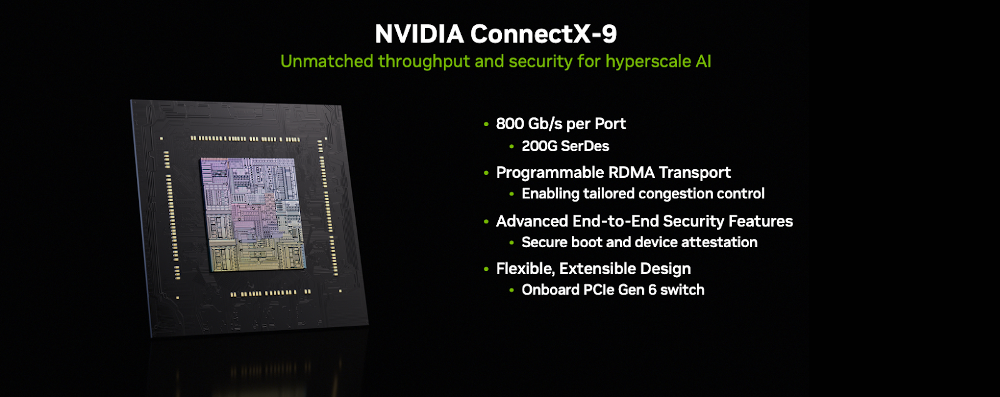
In the Vera Rubin NVL72 rack-scale architecture, each compute tray contains quad ConnectX-9 SuperNIC boards, delivering 1.6Tb/s of network bandwidth per Rubin GPU. Each quad ConnectX-9 SuperNIC board connects to each Vera CPU. This ensures GPUs can participate fully in expert dispatch, collective operations, and synchronization without becoming bottlenecked at the network edge.
在 Vera Rubin NVL72 机架级架构中，每个计算托盘包含四块 ConnectX-9 SuperNIC 板，为每颗 Rubin GPU 提供 1.6Tb/s 的网络带宽。每块四路 ConnectX-9 SuperNIC 板连接到每颗 Vera CPU。这确保了 GPU 能够充分参与专家分配、集合操作和同步，而不会在网络边缘成为瓶颈。
Endpoint control for bursty AI traffic针对突发 AI 流量的端点控制
AI workloads such as MoE inference and training generate highly correlated traffic patterns. Large numbers of GPUs often attempt to inject data into the network simultaneously, creating transient traffic congestion spikes that traditional NICs are not designed to manage.
AI 工作负载（如 MoE 推理和训练）会产生高度相关的流量模式。大量 GPU 常同时尝试向网络注入数据，导致瞬时流量拥塞峰值，而传统 NIC 无法管理这种状况。
ConnectX-9 addresses this challenge by enforcing programmable congestion control, traffic shaping, and packet scheduling directly at the endpoint. Working in concert with Spectrum-6 switches, ConnectX-9 prevents congestion from forming in the first place rather than reacting after queues build.
ConnectX-9 通过直接在端点实施可编程拥塞控制、流量整形和分组调度来应对这一挑战。与 Spectrum-6 交换机协同工作时，ConnectX-9 能在队列堆积之前就防止拥塞形成，而非事后反应。
This coordinated endpoint-to-fabric behavior:
这种协调的端点到结构的行为：
- Smooths traffic injection during all-to-all phases
在全对全阶段平滑注入流量 - Reduces head-of-line blocking and victim flows
减少队头阻塞和受害流 - Maintains high effective bandwidth under load
在负载下保持高有效带宽
Performance isolation for multi-tenant AI factories多租户 AI 工厂的性能隔离
As AI factories consolidate workloads, isolation becomes as important as throughput. Bursty or misconfigured jobs must not degrade cluster-wide performance.
随着 AI 工厂整合工作负载，隔离变得与吞吐量同等重要。突发性作业或配置不当的作业不得降低整个集群的性能。
ConnectX-9 enforces fairness and isolation at the endpoint, ensuring that each job or tenant receives predictable network behavior regardless of the activity of others. This capability is critical for shared AI infrastructure, where inference, training, and post-training workloads often run concurrently on the same fabric.
ConnectX-9 在端点处强制执行公平性和隔离，确保每个作业或租户都能获得可预测的网络行为，不论其他作业的活动如何。这一能力对于共享 AI 基础设施至关重要，在此类基础设施中，推理、训练和训练后工作负载通常在同一网络上并发运行。
By shifting enforcement to the endpoint, the platform avoids relying solely on switch-level mechanisms, improving scalability and reducing operational complexity.
通过将执行机制下沉到端点，该平台避免仅依赖交换机级机制，从而提升了可扩展性并降低了运营复杂性。
Secure endpoints for AI infrastructure面向 AI 基础设施的安全端点
ConnectX-9 also plays a central role in securing AI factory networking. Integrated cryptographic engines support high-throughput encryption for data in motion and data at rest, enabling secure operation without sacrificing performance.
ConnectX-9 在保障 AI 工厂网络安全方面也扮演着核心角色。集成的加密引擎支持对传输中的数据及静态数据进行高吞吐量加密，从而在不牺牲性能的情况下实现安全运行。
Key security capabilities include:
主要安全能力包括：
- Data-in-transit encryption acceleration for IP Security (IPsec) and Platform Security Protocol (PSP) to secure GPU-to-GPU communications
针对 IP 安全（IPsec）和平台安全协议（PSP）的传输中数据加密加速，以保护 GPU 间通信 - Data-at-rest encryption acceleration to secure storage platforms
静态数据加密加速，以保护存储平台 - Secure boot, firmware authentication, and device attestation
安全启动、固件认证和设备证明
These features allow AI factories to operate securely in shared, cloud, or regulated environments while maintaining near-native network performance.
这些特性使 AI 工厂能够在共享、云端或受监管的环境中安全运行，同时保持接近原生网络的性能。
From endpoint control to infrastructure offload从端点控制到基础设施卸载
ConnectX-9 completes the Spectrum-X Ethernet scale-out architecture by controlling how traffic enters the fabric. By shaping, scheduling, isolating, and securing communication at the endpoint, it ensures that AI factory networks behave predictably under real workloads.
ConnectX-9 通过控制流量如何进入网络结构，完善了 Spectrum-X 以太网扩展架构。通过在端点对通信进行整形、调度、隔离和安全保护，它确保 AI 工厂网络在实际工作负载下表现可预测。
With fabric-level behavior defined by Spectrum-6 and endpoint behavior enforced by ConnectX-9, the remaining challenge is how to operate, secure, and manage this infrastructure at scale without consuming valuable CPU and GPU resources.
随着网络结构层面的行为由 Spectrum-6 定义、端点行为由 ConnectX-9 执行，剩下的挑战是如何在不消耗宝贵的 CPU 和 GPU 资源的情况下，大规模运营、保护和管理该基础设施。
That responsibility shifts to BlueField-4 DPUs, which provide the software-defined infrastructure layer for operating the AI factory itself. In the next section, we examine how BlueField-4 powers networking, storage, security, and control services across the Vera Rubin platform.
这一职责转移到了 BlueField-4 DPU 上，它为 AI 工厂的运行提供了软件定义的基础设施层。在下一节中，我们将探讨 BlueField-4 如何在 Vera Rubin 平台中驱动网络、存储、安全和控制服务。
BlueField-4 DPU: Powering the operating system of the AI factoryBlueField-4 DPU：驱动 AI 工厂的操作系统
As AI infrastructure grows to thousands of GPUs and petabytes of data, AI factories must be operated with the rigor, automation, and control of modern cloud infrastructure. The challenge extends beyond connecting GPUs to orchestrating highly distributed systems that can scale, secure, and operate AI workloads efficiently. Applying cloud-scale principles to AI infrastructure requires automation, elasticity, and end-to-end security to be foundational from the start.
随着 AI 基础设施扩展至数千个 GPU 和 PB 级数据量，AI 工厂必须以现代云基础设施的严谨性、自动化和可控性进行运营。挑战不仅在于连接 GPU，更在于编排高度分布式的系统，使其能够高效地扩展、保护并运行 AI 工作负载。将云规模原则应用于 AI 基础设施，需要从一开始就将自动化、弹性和端到端安全性作为基础。
Meeting these demands calls for a specialized data processing unit dedicated to the infrastructure layer itself. NVIDIA BlueField-4 fulfills this role by handling control, security, data movement, and orchestration independently of AI computation. In effect, BlueField-4 is the processor powering the operating system of the AI factory, purpose-built to connect, secure, and manage the infrastructure that powers AI at scale.
满足这些需求需要一种专门用于基础设施层的数据处理单元。NVIDIA BlueField-4 通过独立于 AI 计算之外处理控制、安全、数据移动和编排来履行这一职责。实际上，BlueField-4 是驱动 AI 工厂操作系统运转的处理器，专为连接、保护和管理支撑规模化 AI 的基础设施而设计。
Within the Rubin platform, BlueField-4 operates as a software-defined control plane for the AI factory, enforcing security, isolation, and operational determinism independently of host CPUs and GPUs. By offloading and accelerating infrastructure services onto a dedicated processing layer, BlueField-4 enables AI factories to scale while maintaining consistent performance, strong isolation, and efficient operations.
在 Rubin 平台内，BlueField-4 作为 AI 工厂的软件定义控制平面运行，独立于主机 CPU 和 GPU 来执行安全、隔离及操作确定性。通过将基础设施服务卸载并加速到专用处理层，BlueField-4 使 AI 工厂能够在保持一致性能、强隔离性和高效运营的同时进行扩展。
![Product graphic showing the NVIDIA BlueField-4 DPU on a black background, with a detailed die image on the left and a feature list on the right describing its role in powering the operating system of the AI factory. The BlueField-4 DPU integrates a 64-core NVIDIA Grace CPU based on Arm Neoverse V2 with 250 GB/s of LPDDR5 memory bandwidth, and NVIDIA ConnectX-9 networking delivering up to 800 Gb/s using 200G SerDes over PCIe Gen6. The graphic highlights RDMA-accelerated storage for block, file system, and object access including NVMe-oF and NVMe/TCP, along with zero-trust security capabilities such as 800 Gb/s inline cryptography using AES-XTS, real-time data inspection, and threat detection for secure AI infrastructure.](../assets/network-asset-image28-png-20260521115831-kbrnehg.webp "Figure 13. BlueField-4 DPU 图 13. BlueField-4 DPU")
BlueField-4 integrates a 64-core Grace CPU and high-bandwidth LPDDR5X memory together with ConnectX-9 networking, delivering up to 800 Gb/s of ultra-low-latency Ethernet or InfiniBand connectivity while running infrastructure services directly on the DPU.
BlueField-4 集成了 64 核 Grace CPU 和高带宽 LPDDR5X 内存，同时搭载 ConnectX-9 网络，可在 DPU 上直接运行基础设施服务，提供高达 800 Gb/s 的超低延迟以太网或 InfiniBand 连接。
The table below highlights key advancements in BlueField-4 compared to BlueField-3 across bandwidth, compute, and memory. These improvements allow AI factories to scale pods and services without infrastructure becoming a limiting factor.
| Feature 功能 | BlueField-3 | BlueField-4 |
|---|---|---|
| Bandwidth | 400 Gb/s | 800 Gb/s |
| Compute 计算 | 16 Arm A78 Cores 16 个 Arm A78 核心 | 64 Arm Neoverse V2 6x Compute Performance 6 倍计算性能 |
| Memory bandwidth 内存带宽 | 75 GB/s | 250 GB/s |
| Memory capacity 内存容量 | 32GB | 128GB |
| Cloud networking 云网络 | 32K hosts 32K 主机 | 128K hosts 12.8 万个主机 |
| Data-in-transit encryption 传输中数据加密 |
400Gb/s | 800Gb/s |
| NVMe storage disaggregation NVMe 存储解聚 |
10M IOPs at 4K 4K 下 10M IOPS | 20M IOPs at 4K 4K 下 20M IOPS |
Table 5. NVIDIA BlueField DPU capability comparison表 5. NVIDIA BlueField DPU 性能对比
This generational increase allows AI factories to scale pods, services, and tenants while also advancing infrastructure operations, efficiency, and cybersecurity.
这种代际提升使得 AI 工厂能够扩展 Pod、服务和租户，同时推进基础设施运营、效率和网络安全。
Infrastructure acceleration at AI factory scaleAI 工厂规模的基础设施加速
In traditional systems, infrastructure services run on host CPUs, introducing variability, contention, and security risk as workloads scale. BlueField-4 eliminates this coupling by executing networking, storage, telemetry, and security services entirely off-host. This separation delivers:
在传统系统中，基础设施服务运行在主机 CPU 上，随着工作负载的扩展，会带来可变性、争用和安全风险。BlueField-4 通过完全在主机外执行网络、存储、遥测和安全服务，消除了这种耦合。这种分离带来了：
- Deterministic infrastructure behavior independent of workload mix
独立于工作负载混合的确定性基础设施行为 - Higher GPU and CPU utilization for AI execution
更高的 GPU 和 CPU 利用率，用于 AI 执行 - Improved fault isolation and operational resilience
改进的故障隔离和操作韧性
NVIDIA DOCA provides a consistent software foundation across BlueField generations, enabling reuse of infrastructure services while allowing rapid innovation without disrupting application workloads. DOCA is a comprehensive software framework and SDK that enables developers to build, deploy, and accelerate secure, software-defined data center services on BlueField DPUs and ConnectX devices using open APIs and hardware offloads.
NVIDIA DOCA 为各代 BlueField 提供一致的软件基础，支持基础设施服务的复用，同时允许在不中断应用工作负载的情况下快速创新。DOCA 是一个全面的软件框架和 SDK，使开发人员能够利用开放 API 和硬件卸载，在 BlueField DPU 和 ConnectX 设备上构建、部署和加速安全的、软件定义的数据中心服务。
Built for secure, multi-tenant operation为安全的多租户操作而构建
As AI factories increasingly adopt bare-metal and multi-tenant deployment models, maintaining strong infrastructure control and isolation becomes essential, particularly for environments processing proprietary data, regulated content, and high-value models.
随着 AI 工厂日益采用裸机和多租户部署模式，保持强大的基础设施控制和隔离变得至关重要，特别是在处理专有数据、受监管内容和高级模型的场景中。
As part of the Vera Rubin platform, BlueField-4 introduces Advanced Secure Trusted Resource Architecture (ASTRA), a system-level trust architecture that establishes a trust domain within the compute tray. ASTRA provides AI infrastructure builders with a single, trusted control point to securely provision, isolate, and operate large-scale AI environments without compromising performance.
作为 Vera Rubin 平台的一部分，BlueField-4 引入了高级安全可信资源架构（ASTRA），一种在计算托盘内建立信任域的系统级信任架构。ASTRA 为 AI 基础设施构建者提供了一个单一的可信控制点，以安全地配置、隔离和运营大规模 AI 环境，同时不牺牲性能。
By isolating control, data, and management planes from tenant workloads, BlueField ASTRA enables secure bare-metal operation, strong multi-tenant isolation, and trusted infrastructure control that operates independently of host software.
通过将控制平面、数据平面和管理平面与租户工作负载隔离，BlueField ASTRA 实现了安全的裸机操作、强大的多租户隔离，以及独立于主机软件运行的可靠基础设施控制。
NVIDIA Inference Context Memory Storage—AI-native storage infrastructureNVIDIA 推理上下文内存存储——原生 AI 存储基础设施
The Vera Rubin platform introduces NVIDIA Inference Context Memory Storage (ICMS), an AI-native infrastructure tier designed for the agentic era, where inference state routinely outlives a single GPU execution window. As long-context, multi-turn, and multi-agent workloads push toward millions of tokens, KV cache capacity grows fast, forcing that state into either scarce GPU HBM or durability-optimized enterprise storage, which drives up latency, power, and cost per token.
Vera Rubin 平台引入了 NVIDIA 推理上下文内存存储（ICMS），这是一个为智能体时代设计的 AI 原生基础设施层。在智能体时代，推理状态通常比单个 GPU 执行窗口更持久。随着长上下文、多轮对话和多智能体工作负载向数百万 token 规模发展，KV 缓存容量迅速增长，迫使这些状态要么存储在稀缺的 GPU HBM 中，要么存储在优化耐用性的企业级存储中，从而导致每个 token 的延迟、功耗和成本增加。
ICMS, powered by NVIDIA BlueField-4, bridges the gap between GPU memory tiers and shared storage. ICMS establishes a pod-level “G3.5” context memory layer, an Ethernet-attached, flash-based tier optimized specifically for ephemeral, latency-sensitive KV cache, sized for petabytes of shared capacity per GPU pod and built for frequent pre-staging back into host and GPU memory to avoid decode stalls.
由 NVIDIA BlueField-4 驱动的 ICMS，弥合了 GPU 内存层级与共享存储之间的鸿沟。ICMS 建立了一个机架级“G3.5”上下文内存层，这是一个基于以太网、闪存的层级，专门针对短暂的、延迟敏感的 KV 缓存进行了优化，每个 GPU 机架可分配 PB 级共享容量，并设计用于频繁预加载回主机和 GPU 内存，从而避免解码停顿。
At scale, ICMS turns reusable KV cache into a shared pod resource rather than a per-node liability, improving utilization and reducing redundant recomputation. NVIDIA reports up to 5x higher tokens-per-second and up to 5x better power efficiency versus traditional storage approaches by reliably serving and prestaging KV from this dedicated tier.
在规模部署下，ICMS 将可复用的 KV 缓存转化为共享的机架资源，而非每个节点的负担，从而提升了利用率并减少了冗余重计算。NVIDIA 报告称，通过从这一专用层级可靠地提供和预加载 KV，相较于传统存储方法，每秒令牌数（tokens-per-second）提升了高达 5 倍，能效也提升了高达 5 倍。
- G3.5 tier: Ethernet-attached flash purpose-built for KV cache, positioned between local tiers (HBM, DRAM, local SSD) and durable shared storage, so context stays close enough to be reused without paying “G4 latency.”
G3.5 层级：专为 KV 缓存打造的基于以太网的闪存层，位于本地层级（HBM、DRAM、本地 SSD）与持久化共享存储之间，使上下文保持足够近的距离以便复用，无需承担“G4 延迟”的代价。 - BlueField-4 offload: BlueField-4 runs the KV I/O plane and efficiently terminates NVMe-over-Fabrics and object/RDMA protocols, reducing host overhead while keeping KV movement fast, predictable, and secure.
BlueField-4 卸载：BlueField-4 运行 KV I/O 平面，并高效处理 NVMe over Fabrics 及对象/RDMA 协议，降低了主机开销，同时确保 KV 移动快速、可预测且安全。 - Spectrum-X fabric: Spectrum-X Ethernet provides predictable, low-latency, low-jitter RDMA connectivity between Rubin compute nodes and ICMS target nodes for consistent shared KV access across the pod.
Spectrum-X 网络结构：Spectrum-X 以太网为 Rubin 计算节点与 ICMS 目标节点之间提供可预测、低延迟、低抖动的 RDMA 连接，确保整个 pod 内共享 KV 访问的一致性。 - Orchestration: NVIDIA Dynamo and NIXL coordinate KV block management and prestaging across the hierarchy, with DOCA providing KV communication and storage interfaces that treat context as a first-class resource.
编排：NVIDIA Dynamo 和 NIXL 协调整个层级中的 KV 块管理和预加载，DOCA 提供 KV 通信和存储接口，将上下文视为一等资源。
Operating the AI factory as a system将 AI 工厂作为系统运行
BlueField-4 establishes infrastructure as a first-class architectural layer of the AI factory. By operating the control, security, data movement, and orchestration planes on a dedicated processing layer, it enables AI factories to remain predictable, secure, and efficient at scale.
BlueField-4 将基础设施确立为 AI 工厂的一等架构层。通过在专用处理层上运行控制、安全、数据移动和编排平面，它使 AI 工厂能够在规模上保持可预测、安全和高效率。
Within the Vera Rubin platform, NVLink defines scale-up behavior, ConnectX-9 and Spectrum-X Ethernet switches govern scale-out and scale-across communication, and BlueField-4 operates the AI factory itself.
在 Vera Rubin 平台中，NVLink 定义了向上扩展行为，ConnectX-9 和 Spectrum-X 以太网交换机管理向外扩展和跨扩展通信，而 BlueField-4 则运行 AI 工厂本身。
Spectrum-6 Ethernet switch: Scale-out and scale-across for AI factoriesSpectrum-6 以太网交换机：AI 工厂的横向扩展与跨域扩展
AI factories must also scale beyond a single Vera Rubin NVL72 system and often need to scale across geographically dispersed data centers. Performance is then determined not just by bandwidth, but by how predictably the network behaves under synchronized, bursty AI traffic.
AI 工厂不仅要突破单个 Vera Rubin NVL72 系统的规模限制，还需跨越地理上分散的数据中心进行扩展。此时的性能不仅取决于带宽，更取决于网络在同步突发的 AI 流量下表现出的可预测性。
To support both scale-out and scale-across AI factory deployments, the Vera Rubin platform introduces NVIDIA Spectrum-X Ethernet Photonics, a new generation of Spectrum-X Ethernet switching based on co-packaged optics, advancing NVIDIA’s purpose-built Ethernet fabric for accelerated computing.
为支持横向扩展和纵向扩展的 AI 工厂部署，Vera Rubin 平台引入了 NVIDIA Spectrum-X Ethernet Photonics——基于共封装光学技术的新一代 Spectrum-X 以太网交换，进一步推动了 NVIDIA 专为加速计算打造的高性能以太网架构。
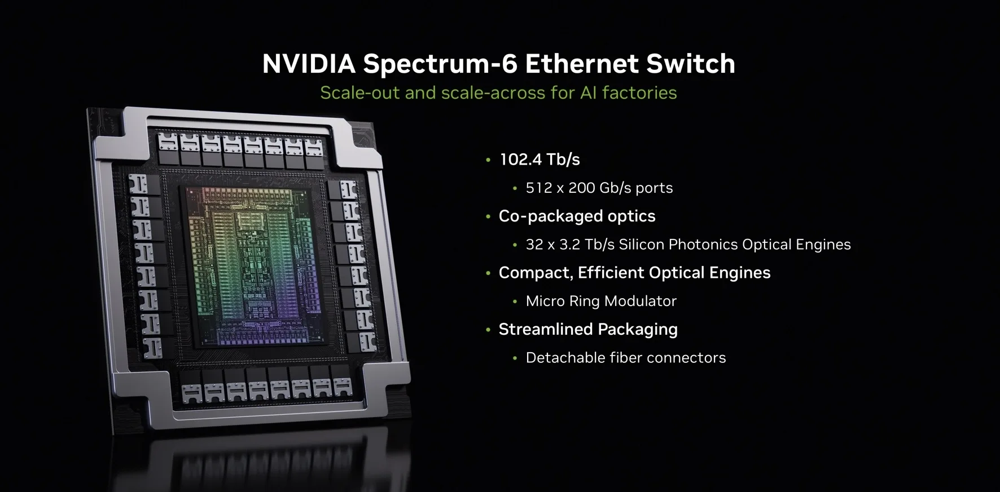
Spectrum-6 is engineered specifically for AI workloads, where traffic is highly synchronized, bursty, and asymmetric. Spectrum-6 doubles per-switch-chip bandwidth to 102.4 Tb/s using 200G PAM4 SerDes, enabling dense, high-port count fabrics optimized for AI traffic patterns.
Spectrum-6 专为 AI 工作负载设计，其流量具有高度同步、突发和不对称的特点。Spectrum-6 利用 200G PAM4 SerDes 将每交换芯片带宽翻倍至 102.4 Tb/s，从而支持针对 AI 流量模式优化的大容量、高端口数网络架构。
High effective bandwidth, fine-grained telemetry, and hardware-assisted performance isolation enable deterministic behavior in large, multi-tenant AI fabrics, while remaining fully standards-based and interoperable with open networking software.
高有效带宽、细粒度遥测以及硬件辅助的性能隔离，使得在大型多租户 AI 网络中实现确定性行为成为可能，同时完全基于标准并与开放网络软件互操作。
Spectrum-X Ethernet fabricSpectrum-X 以太网架构
Unlike off-the-shelf Ethernet, Spectrum-X Ethernet delivers predictable, low-latency, high-bandwidth connectivity at scale through advanced congestion control, adaptive routing, and lossless Ethernet behavior. These capabilities minimize jitter, tail latency, and packet loss under sustained AI load.
与非现成的以太网不同，Spectrum-X 以太网通过先进的拥塞控制、自适应路由和无损以太网行为，提供可预测、低延迟、高带宽的大规模连接。这些能力在持续的人工智能负载下，最小化了抖动、尾延迟和数据包丢失。
Anchored on Spectrum-6, Spectrum-X Ethernet was co-designed with the Vera Rubin platform to ensure that routing behavior, congestion control, and telemetry reflect real AI communication patterns rather than traditional enterprise networking assumptions. This alignment allows scale-out performance to track application behavior, not theoretical peak throughput.
以 Spectrum-6 为核心，Spectrum-X 以太网与 Vera Rubin 平台协同设计，确保路由行为、拥塞控制和遥测反映真实的人工智能通信模式，而非传统企业网络的假设。这种对齐使得扩展性能能够跟踪应用行为，而不是理论峰值吞吐量。
Spectrum-X Ethernet also incorporates Spectrum-XGS Ethernet scale-across technology, which adds distance-aware congestion control for large, geographically distributed AI deployments. End-to-end telemetry and deterministic routing enable efficient load balancing across sites, keeping multi-site AI factories operating at high utilization.
Spectrum-X 以太网还集成了 Spectrum-XGS 以太网跨规模扩展技术，为大型地理分布式人工智能部署增加了距离感知的拥塞控制。端到端的遥测和确定性路由实现了跨站点的高效负载均衡，使多站点人工智能工厂保持高利用率运行。
Spectrum-X Ethernet Photonics: Redefining network efficiency at AI scaleSpectrum-X 以太网光子技术：在 AI 规模下重新定义网络效率
Spectrum-X Ethernet Photonics fundamentally improves network efficiency by eliminating pluggable transceivers and DSP retimers. Integrated silicon photonics combined with external laser arrays reduce component count and failure points compared to network fabrics based on traditional pluggable transceivers. Spectrum-X Ethernet Photonics delivers:
Spectrum-X 以太网光电子技术通过消除可插拔收发器和 DSP 重定时器，从根本上提高了网络效率。与基于传统可插拔收发器的网络架构相比，集成硅光电子技术与外部激光阵列减少了组件数量和故障点。Spectrum-X 以太网光电子技术提供：
- \~5x better network power efficiency
约 5 倍更好的网络能效 - Lower end-to-end latency
更低的端到端延迟 - Dramatically improved signal integrity
显著改善的信号完整性
By reducing optical loss from \~22 dB to \~4 dB, Spectrum-X Ethernet achieves up to 64x better signal integrity. It enables higher uptime, simplified serviceability with high-density MMC-12 cabling, and lower total cost of ownership for large training and inference clusters.
通过将光学损耗从约 22 dB 降低到约 4 dB，Spectrum-X 以太网实现了高达 64 倍的信号完整性提升。它能够提高正常运行时间，通过高密度 MMC-12 布线简化可维护性，并降低大型训练和推理集群的总体拥有成本。
![Comparison image showing two NVIDIA Spectrum-6 Ethernet switch systems on a black background, illustrating scale options for AI factory networking. On the left, the SN6800 switch is shown as a larger chassis delivering 409.6 Tb/s using co-packaged optics, supporting 512 ports of 800 Gb/s or 2048 ports of 200 Gb/s, and designed for liquid-cooled deployments. On the right, the smaller SN6810 switch provides 102.4 Tb/s with co-packaged optics, supporting 128 ports of 800 Gb/s or 512 ports of 200 Gb/s, also liquid-cooled. The graphic highlights a common Spectrum-6 architecture scaled across different form factors for high-bandwidth, energy-efficient Ethernet fabrics.](../assets/network-asset-image21-png-20260521115831-iromyoo.webp "Figure 15. NVIDIA Spectrum-X Ethernet Photonics switches 图 15. NVIDIA Spectrum-X 以太网光子交换机")
Built for real AI traffic patterns为真实 AI 流量模式而构建
Modern MoE training and inference introduce a variable all-to-all communication phase driven by stochastic expert token dispatch. These workloads generate highly bursty traffic that can overwhelm traditional Ethernet fabrics, leading to packet loss, congestion collapse, and degraded job completion times.
现代 MoE 训练和推理引入了由随机专家令牌调度驱动的可变全到全通信阶段。这些工作负载会产生高度突发的流量，可能压垮传统以太网架构，导致数据包丢失、拥塞崩溃，并降低作业完成时间。
Spectrum-X Ethernet addresses this at the fabric level through coordinated congestion control and adaptive routing across switches and endpoints. The result is significantly faster job completion for expert dispatch and collective operations under real AI load.
Spectrum-X 以太网在架构层面通过跨交换机和端点的协调拥塞控制与自适应路由解决了这一问题。其结果是在真实 AI 负载下，专家调度和集合操作的作业完成时间显著缩短。
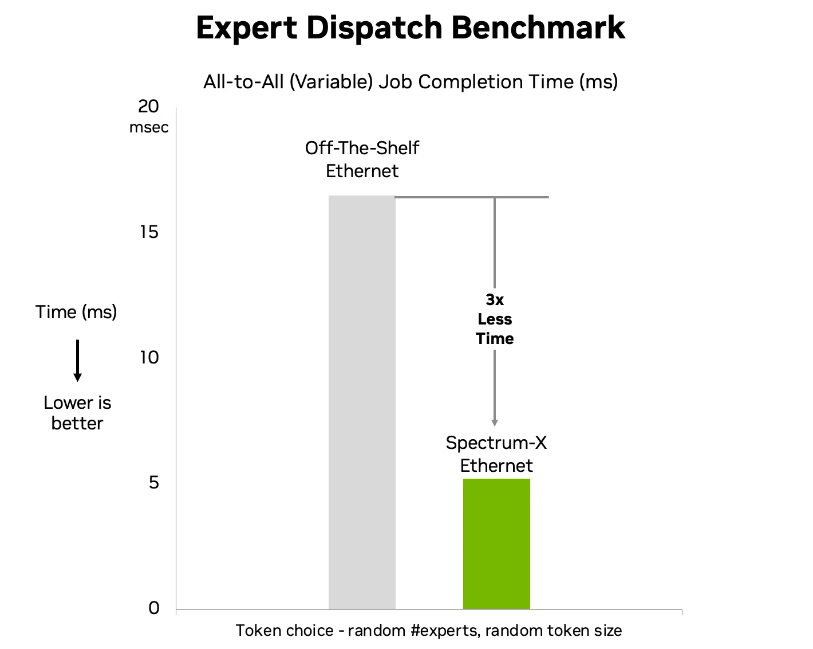
Advancing the fabric without re-architecting the network在不重新设计网络架构的前提下推进网络结构
Spectrum-X Ethernet evolves generation-over-generation through end-to-end co-design across switch silicon, optics, SuperNICs, and system software. This delivers coordinated gains in bandwidth, signaling, and scalability without requiring a fundamental fabric redesign, allowing customers to scale AI clusters predictably as performance requirements grow.
Spectrum-X 以太网通过跨交换芯片、光学器件、超级网卡和系统软件的端到端协同设计，实现逐代演进。这种设计在带宽、信号传输和可扩展性方面带来协调一致的性能提升，而无需对网络结构进行根本性改造，使客户能够随着性能需求的增长，以可预测的方式扩展 AI 集群。
| Feature 功能 | Grace Blackwell | Vera Rubin |
|---|---|---|
| Key component 关键组件 | Spectrum-X SN5000 series Spectrum-X SN5000 系列 | ConnectX-8 SuperNIC ConnectX-8 超级网卡 |
| Chip 芯片 | Spectrum-4 | ConnectX-8 |
| Maximum bandwidth 最大带宽 | 51.2 Tb/s per switch chip(64 x 800 Gb/s) 每个交换芯片 51.2 Tb/s（64 x 800 Gb/s） |
800 Gb/s (2 x 400G) per GPU 每 GPU 800 Gb/s（2 x 400G） |
| SerDes | 100G PAM4 | 100/200G PAM4 |
| Protocol 协议 | Ethernet 以太网 | Ethernet, InfiniBand 以太网, InfiniBand |
| Connectivity 连接性 | OSFP | OSFP, QSFP112 |
Table 6. NVIDIA Spectrum-X Ethernet platform evolution表 6. NVIDIA Spectrum-X 以太网平台演进
For more on Spectrum-X Ethernet Photonics, check out this blog .
4. From chips to systems: NVIDIA Vera Rubin superchip to DGX SuperPOD4. 从芯片到系统：NVIDIA Vera Rubin 超级芯片到 DGX SuperPOD
AI factory performance is not determined by individual chips in isolation, but by how those chips are composed into systems that can be deployed, operated, and scaled reliably. The Vera Rubin platform is designed with this progression in mind, moving deliberately from silicon-level innovation to rack-scale systems and finally to full AI factory deployments.
This section traces that progression, starting with the Vera Rubin superchip as the foundational compute building block, then scaling through the NVL72 rack architecture and its integrated networking fabrics, and culminating in the NVIDIA DGX SuperPOD as the deployment-scale unit of an AI factory. At each step, the goal is the same: Preserve the efficiency and utilization gains achieved at the chip level as the system scales outward.
NVIDIA Vera Rubin superchip
At the heart of the Rubin platform is the NVIDIA Vera Rubin superchip, the foundational compute building block that tightly integrates AI execution with high-bandwidth data movement and orchestration. Each superchip combines two Rubin GPUs with one Vera CPU through memory-coherent NVLink-C2C interconnect, collapsing traditional CPU-GPU boundaries into a unified, rack-scale execution domain.
在 Rubin 平台的核心是 NVIDIA Vera Rubin 超级芯片，这一基础计算构建块将 AI 执行与高带宽数据移动及编排紧密集成。每个超级芯片通过内存一致的 NVLink-C2C 互连将两颗 Rubin GPU 与一颗 Vera CPU 相结合，突破了传统的 CPU-GPU 边界，形成一个统一的机架级执行域。
This approach is not new for NVIDIA. Beginning with NVIDIA Grace Hopper and continuing through subsequent generations, close CPU-GPU integration has been a core design principle to co-optimize compute, memory, and interconnect to sustain utilization under real training and inference workloads.
这种方法对 NVIDIA 来说并不陌生。从 NVIDIA Grace Hopper 开始，并延续到后续各代产品中，紧密的 CPU-GPU 集成一直是其核心设计原则，旨在协同优化计算、内存和互连，从而在真实的训练和推理工作负载下维持高利用率。
In the Vera Rubin superchip, the CPU functions as a data engine tightly coupled to GPU execution. This coupling enables low-latency coordination, shared memory access, and efficient orchestration across training, post-training, and inference workloads. Rather than acting as an external host, the Vera CPU participates directly in execution, handling data movement, scheduling, synchronization, and execution flow without introducing bottlenecks.
在 Vera Rubin 超级芯片中，CPU 作为与 GPU 执行紧密耦合的数据引擎。这种耦合实现了低延迟协调、共享内存访问，以及在训练、后训练和推理工作负载中的高效编排。Vera CPU 并非充当外部主机，而是直接参与执行过程，处理数据移动、调度、同步和执行流程，且不引入瓶颈。
By integrating GPU compute with a high-bandwidth CPU data engine on a single host processing motherboard, the superchip improves data locality, reduces software overhead, and sustains higher utilization across heterogeneous execution phases. It serves as the architectural bridge between chip-level innovation and rack-scale intelligence.
通过将 GPU 计算与高带宽 CPU 数据引擎集成在单一主机处理主板上，该超级芯片提升了数据局部性，降低了软件开销，并在异构执行阶段维持了更高利用率。它充当了从芯片级创新到机架级智能的架构桥梁。
![Annotated product graphic of the NVIDIA Vera Rubin Superchip shown on a black background, illustrating its role as a processor for gigascale AI factories. The vertical module highlights integrated components including dual Rubin GPUs connected via NVLink 6, a Vera CPU, LPDDR5X SOCAMM memory, and a PCIe Gen6 midplane. Callouts identify key subsystems and interconnects, while a feature list emphasizes 100 petaFLOPS of NVFP4 AI performance, 88 NVIDIA custom Olympus CPU cores, 2 TB of fast memory, and a total of 6 trillion transistors. The image conveys tight CPU-GPU integration and extreme scale-up design for next-generation AI infrastructure.](../assets/network-asset-image9-20260521115831-f54vrwu.png "Figure 17. Vera Rubin superchip 图 17. Vera Rubin 超级芯片")
Vera Rubin NVL72 compute trayVera Rubin NVL72 计算托盘
The compute tray translates the Vera Rubin superchip into a deployable, serviceable unit designed for AI factory scale. Each tray integrates two superchips, power delivery, cooling, networking, and management into a modular, cable-free assembly optimized for density, reliability, and ease of operation.
计算托盘将 Vera Rubin 超级芯片转化为一个可部署、可维护的单元，专为 AI 工厂规模设计。每个托盘集成两个超级芯片、电源、冷却、网络和管理功能，形成一个模块化、无电缆的组件，针对密度、可靠性和操作便利性进行了优化。
A redesigned internal liquid manifold and universal quick-disconnects support significantly higher flow rates than prior generations, enabling stable performance under sustained, high-power workloads. The modular compute tray uses independent front and rear bays to streamline assembly and service. Although the compute tray must be taken offline during maintenance, the modular cable-free design reduces service time by up to 18x. Assembly that used to take more than 1.5 hours for Blackwell now takes only \~5 minutes with Vera Rubin.
重新设计的内部液流歧管和通用快接头支持比前代产品显著更高的流速，确保在高功率持续工作负载下实现稳定性能。模块化计算托盘采用独立的前后仓设计，简化了装配与维护流程。尽管维护期间计算托盘需离线操作，但模块化无线缆设计将维修时间缩短了多达 18 倍。此前 Blackwell 平台需要超过 1.5 小时的装配工作，如今在 Vera Rubin 上仅需约 5 分钟即可完成。
![Annotated product graphic of the NVIDIA Vera Rubin NVL72 compute tray shown on a black background, presenting a modular compute engine designed for AI factories. The image highlights two Vera Rubin Superchips, NVLink 6 spine connectors, along with integrated BlueField-4 DPUs and ConnectX-9 SuperNICs. Callouts identify major components including the superchips, networking interfaces, and liquid-cooled chassis. A feature list emphasizes 200 petaFLOPS of NVFP4 AI performance per tray, 14.4 TB/s of NVLink 6 bandwidth, 2 TB of fast memory, 800 Gb/s BlueField DPU capability, 1.6 Tb/s of ConnectX-9 SuperNIC bandwidth per GPU, and a fully liquid-cooled design optimized for large-scale AI factory deployments.](../assets/network-asset-Figure-18-20260521115831-xyhqdud.png "Figure 18. Vera Rubin NVL72 compute tray 图 18. Vera Rubin NVL72 计算托盘")
ConnectX-9 SuperNICs provide high-bandwidth scale-out connectivity (1.6 Tb/s per GPU), while BlueField-4 DPUs offload networking, storage, and security services, allowing CPUs and GPUs to remain focused on AI execution.
![Side-by-side comparison graphic on a black background showing two NVIDIA networking modules used in the Vera Rubin compute tray. On the left is the NVIDIA ConnectX-9 SuperNIC module, labeled with features including 1.6 Tb/s bandwidth using 200G PAM4 SerDes, programmable RDMA and data path acceleration, state-of-the-art security, and optimization for massive-scale AI. On the right is the NVIDIA BlueField-4 DPU module, highlighting an 800 Gb/s DPU for SmartNIC and storage processing, a 64-core Grace CPU integrated with ConnectX-9, and generational gains of 2x networking performance, 6x compute, and 3x memory bandwidth versus BlueField-3. A header at the top reads “NVIDIA ConnectX-9 and BlueField-4” with a subtitle describing a high-performance, programmable, secure data path for the Rubin architecture.](../assets/network-asset-image-28-1-png-20260521115831-2kqvnsc.webp "Figure 19. ConnectX-9 and BlueField-4 modules for the Vera Rubin compute tray")
Vera Rubin NVL72 NVLink switch tray
To transform multiple compute trays into one rack-scale accelerator Vera Rubin introduces the NVLink 6 switch tray.
Each switch tray incorporates four NVLink 6 switch chips, doubling the per-GPU scale-up bandwidth as well as the in-network compute for accelerating collective operations directly inside the fabric. This is critical for MoE routing, synchronization-heavy inference, and communication-intensive training phases where scale-up efficiency directly determines cost and latency.
By integrating scale-up networking as a first-class rack component, the NVLink switch tray ensures that performance scales predictably as models, batch sizes, and reasoning depth continue to increase.
通过将纵向扩展网络作为一级机架组件集成，NVLink 交换机托盘确保性能随模型、批量大小和推理深度的持续增加而可预测地扩展。
![Annotated product graphic of the NVIDIA Vera Rubin NVLink Switch Tray shown on a black background, illustrating the scale-up networking fabric used in Vera Rubin systems. The image highlights NVLink 6 spine connectors, integrated NVLink 6 switches, and a system management module within a fully liquid-cooled tray. Callouts and specifications emphasize 3.6 TB/s of all-to-all bandwidth per GPU, 28.8 TB/s of total tray bandwidth, and 14.4 TFLOPS of FP8 in-network compute enabled by NVLink 6 SHARP acceleration. The image conveys a tightly integrated, high-bandwidth, low-latency fabric designed for large-scale, multi-GPU AI workloads.](../assets/network-asset-image17-png-20260521115831-p0nzucl.webp "Figure 20. Vera Rubin NVLink switch tray")
Spectrum-X Ethernet switching for scale-out AI factories
NVLink 6 allows 72 GPUs to behave as one rack-scale accelerator inside the rack. Spectrum-X Ethernet extends that capability beyond the rack, enabling predictable, high-throughput scale-out connectivity across rows and data centers, without the variability that traditional Ethernet often introduces under synchronized AI traffic.
NVLink 6 使 72 个 GPU 在机架内如同一个机架级加速器般协同工作。Spectrum-X 以太网将这种能力扩展到机架之外，实现跨行和数据中心的可预测、高吞吐量横向扩展连接，而不会出现传统以太网在同步 AI 流量下常见的性能波动。
AI factory communication patterns are fundamentally different from enterprise workloads. MoE dispatch, collective operations, and synchronization-heavy phases generate bursty, asymmetric, and highly correlated flows that can amplify congestion, tail latency, and performance jitter at scale. Spectrum-X Ethernet is engineered specifically for these patterns through coordinated congestion control, adaptive routing, and end-to-end telemetry that keep effective bandwidth high and performance repeatable under load.
AI 工厂的通信模式与企业工作负载有本质区别。MoE 调度、集合操作以及高同步阶段的流量具有突发性、非对称性和高度相关性，这些特性会在大规模部署中加剧拥塞、尾延迟和性能抖动。Spectrum-X 以太网专为应对此类模式而设计，通过协调拥塞控制、自适应路由和端到端监测，确保在高负载下保持高有效带宽和稳定的性能表现。
Within the Vera Rubin NVL72 platform, Spectrum-X is realized through the combination of Spectrum-6 switches and ConnectX-9 SuperNIC endpoints included in the compute nodes. Together, they form a tightly co-designed scale-out system where the fabric and endpoints cooperate to shape traffic, isolate workloads, and prevent hotspots, enabling high utilization in multi-job, multi-tenant AI factories.
在 Vera Rubin NVL72 平台中，Spectrum-X 通过计算节点内的 Spectrum-6 交换机和 ConnectX-9 SuperNIC 端点组合实现。它们共同构成一个紧密协作的横向扩展系统，其中结构与端点协同工作，塑造流量、隔离工作负载并防止热点，从而在多人多租户 AI 工厂中实现高利用率。
![Product graphic of an NVIDIA Spectrum-X Ethernet switch with co-packaged optics shown on a black background, illustrating a scale-out and scale-across networking platform for AI factories. The image shows a partially opened, liquid-cooled switch chassis with an exposed silicon photonics and switching die at the center. Text highlights include 102.4 Tb/s scale-out switch infrastructure, co-packaged 200G silicon photonics, and 95% effective bandwidth at scale. Additional callouts emphasize system-level benefits of 5x power efficiency, 5x application uptime, and 10x reliability, positioning Spectrum-X as a high-efficiency, high-availability Ethernet fabric optimized for large-scale AI deployments.](../assets/network-asset-image1-20260521115831-e8xzb51.png "Figure 21. Spectrum-X Ethernet switching for the Vera Rubin platform 图 21. Vera Rubin 平台的 Spectrum-X 以太网交换")
NVIDIA DGX SuperPOD: the AI factory deployment unitNVIDIA DGX SuperPOD：AI 工厂部署单元
DGX SuperPOD represents the blueprint for deployment-scale realization of the Vera Rubin platform. Built with eight DGX Vera Rubin NVL72 systems, it defines the minimum unit at which AI factory economics, reliability, and performance converge in production environments.
DGX SuperPOD 代表了 Vera Rubin 平台实现部署规模化的蓝图。它由八个 DGX Vera Rubin NVL72 系统构建，定义了在生产环境中 AI 工厂的经济性、可靠性和性能达到交汇点所需的最小单元。
Unlike traditional clusters assembled from discrete components, DGX SuperPOD is designed as a complete system. Every layer, from silicon and interconnects to orchestration and operations, is co-designed and validated to deliver sustained utilization, predictable latency, and efficient conversion of power into tokens at scale.
与传统由独立组件组装而成的集群不同，DGX SuperPOD 被设计为一个完整的系统。从芯片和互连到编排和运营的每一层，都经过协同设计和验证，以实现持续的利用率、可预测的延迟，以及大规模地将电力高效转化为 token。
Within each NVIDIA DGX Vera Rubin NVL72 system, 72 Rubin GPUs operate as one rack-scale accelerator through NVLink 6. Spectrum-X Ethernet extends the platform beyond the rack with deterministic, high-throughput scale-out connectivity, allowing multiple DGX Vera Rubin NVL72 systems to be composed into a DGX SuperPOD. Integrated with NVIDIA Mission Control software and certified storage, these elements create a validated, production-ready AI factory building block, ready to scale into tens of thousands of GPUs.
在每个 NVIDIA DGX Vera Rubin NVL72 系统中，72 个 Rubin GPU 通过 NVLink 6 作为一个机架级加速器运行。Spectrum-X 以太网通过确定性、高吞吐量的横向扩展连接，将平台扩展至单个机架之外，从而可以将多个 DGX Vera Rubin NVL72 系统组合成一个 DGX SuperPOD。这些组件与 NVIDIA Mission Control 软件及认证存储集成，构成一个经过验证、可投入生产的 AI 工厂构建模块，能够扩展至数万个 GPU。
This design enables DGX SuperPOD to deliver true AI factory abilities: continuous operation, high-uptime serviceability, and consistent performance across training, post-training, and real-time inference workloads.
这种设计使 DGX SuperPOD 能够实现真正的 AI 工厂能力：持续运行、高可用性维护，以及在训练、后训练和实时推理工作负载中保持一致的性能。
![Wide system-level graphic showing an NVIDIA DGX SuperPOD built with DGX Vera Rubin NVL72 racks, presented on a black background as a blueprint for accelerating intelligence at scale. The image depicts a row of integrated rack-scale systems combining compute, networking, and storage. Text highlights include eight Vera Rubin NVL72 systems connected with NVLink 6 scale-up networking and Spectrum-X Ethernet scale-out networking, along with NVIDIA Inference Context Memory Storage and NVIDIA Mission Control software. The visual conveys a fully integrated AI factory architecture designed for large-scale training, inference, and reasoning workloads.](../assets/network-asset-image27-png-20260521115831-gfwdavw.webp "Figure 22. DGX SuperPOD with DGX Vera Rubin NVL72 Systems 图 22. 配备 DGX Vera Rubin NVL72 系统的 DGX SuperPOD")
5. Software and developer experience5. 软件与开发者体验
Vera Rubin also has been designed to accelerate innovation without forcing developers to re-architect their software. At its foundation, the platform maintains full CUDA backward compatibility across hardware generations, ensuring existing models, frameworks, and workflows run seamlessly while automatically benefiting from generational improvements in compute, memory, and interconnect.
Vera Rubin 的设计初衷是加速创新，同时无需开发者重新架构软件。该平台从根本上保持了跨硬件世代的完全 CUDA 向后兼容性，确保现有模型、框架和工作流程无缝运行，同时自动受益于计算、内存和互连技术每代更迭带来的提升。
CUDA-X libraries—the performance foundationCUDA-X 库——性能基础
The CUDA platform encompasses a programming model, core libraries, and communication stacks that accelerate applications and expose the full distributed capabilities of the rack-scale system. Developers can program Rubin GPUs as individual devices or as part of a single 72-GPU NVLink domain using NVIDIA Collective Communications Library (NCCL), NVIDIA Inference Transfer Library (NIXL), and NVLink-aware collectives. This design enables models to scale across the rack without custom partitioning, topology-aware workarounds, or manual orchestration.
CUDA 平台包含一个编程模型、核心库和通信栈，可加速应用程序并展现机架级系统的全部分布式能力。开发者可以使用 NVIDIA 集合通信库 (NCCL)、NVIDIA 推理传输库 (NIXL) 和 NVLink 感知集合来将 Rubin GPU 编程为单个设备或作为单个 72 GPU NVLink 域的一部分。这种设计使得模型能够跨机架扩展，无需自定义分区、拓扑感知的变通方案或手动编排。
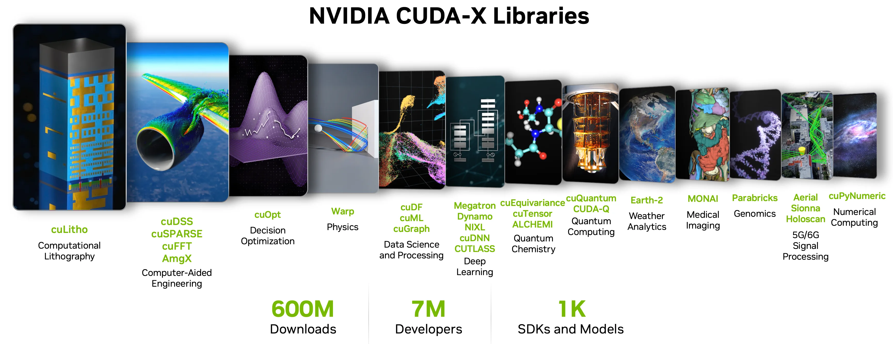
At the kernel and library layer, NVIDIA provides highly optimized building blocks for the most demanding AI workloads. Libraries such as NVIDIA cuDNN, NVIDIA CUTLASS, FlashInfer, and a new Transformer Engine deliver peak efficiency for attention, activation, and narrow-precision execution. These components are tightly coupled with Rubin’s Tensor Cores, HBM4 memory subsystem, and NVLink 6 interconnect, enabling sustained performance across dense, sparse, and communication-heavy workloads.
在内核和库层，NVIDIA 为最苛刻的 AI 工作负载提供了高度优化的构建块。诸如 NVIDIA cuDNN、NVIDIA CUTLASS、FlashInfer 以及全新的 Transformer Engine 等库，为注意力机制、激活函数和窄精度执行提供了卓越效率。这些组件与 Rubin 的 Tensor Core、HBM4 内存子系统及 NVLink 6 互连紧密耦合，使得在密集型、稀疏型和通信密集型工作负载中都能保持持续性能。
Together, these libraries allow developers to focus on model behavior rather than hardware-specific tuning, while still extracting maximum performance from the underlying platform.
这些库共同让开发者能够专注于模型行为而非硬件特定调优，同时仍能从底层平台中提取最大性能。
Large-scale training—from research to production with NVIDIA NeMo大规模训练——从研究到生产，借助 NVIDIA NeMo
Higher-level frameworks build directly on the Vera Rubin platform to maximize developer productivity and scalability. PyTorch and JAX frameworks ship with native NVIDIA acceleration to enable training, post-training, and inference workflows to scale across racks with minimal code changes.
更高级的框架直接构建在 Vera Rubin 平台之上，以最大化开发者的生产力和可扩展性。PyTorch 和 JAX 框架原生支持 NVIDIA 加速，使得训练、后训练和推理工作流能够在跨机架扩展时仅需极少的代码更改。
At the core of NVIDIA’s training and customization stack is the NVIDIA NeMo Framework, which provides an end-to-end workflow for building, adapting, aligning, and deploying large models at AI factory scale. NeMo unifies data curation, large-scale distributed training, alignment, and parameter-efficient customization into a single, production-oriented framework. Through NVIDIA NeMo Run, developers can configure, launch, and manage experiments consistently across local environments, SLURM clusters, and Kubernetes-based AI factories.
NVIDIA 训练和定制化堆栈的核心是 NVIDIA NeMo Framework，它提供了在 AI 工厂规模下构建、适配、对齐和部署大模型的端到端工作流。NeMo 将数据整理、大规模分布式训练、对齐以及参数高效定制化统一整合到一个面向生产的框架中。通过 NVIDIA NeMo Run，开发者可以在本地环境、SLURM 集群和基于 Kubernetes 的 AI 工厂中一致地配置、启动和管理实验。
![Layered diagram of the NVIDIA NeMo Framework showing the end-to-end AI model lifecycle from data curation through pre-training, post-training alignment and reinforcement learning, and inference. The top row groups workflow stages, while underlying layers show recipe collections, core framework libraries, and optimization libraries. Components include Curator, Megatron-LM, Megatron-Bridge, AutoModel, RL and Gym, export and deploy tools, evaluators, and guardrails, built on Megatron-core, PyTorch, and emerging optimizers. The framework runs across local machines, SLURM, DGX Cloud, and Kubernetes clusters, illustrating how NeMo integrates training, optimization, and inference into a unified platform.](../assets/network-asset-Rubin-Fig-23-1-png-20260521115831-l2q9yq4.webp "Figure 24. NeMo framework for large-scale model training, alignment, and deployment 图 24. 用于大规模模型训练、对齐和部署的 NeMo 框架")
For extreme-scale training, NeMo integrates tightly with NVIDIA Megatron Core, which supplies the underlying distributed training engine. Megatron Core provides advanced parallelism strategies, optimized data loaders, and support for modern model architectures including dense LLMs, MoE, state-space models, and multimodal networks. This integration allows NeMo to scale training across thousands of GPUs while abstracting the complexity of parallelism and communication from the user.
对于超大规模训练，NeMo 与 NVIDIA Megatron Core 紧密集成，后者提供了底层分布式训练引擎。Megatron Core 提供了先进的并行策略、优化后的数据加载器，并支持包括密集 LLMs、MoE、状态空间模型和多模态网络在内的现代模型架构。这种集成使 NeMo 能够在数千个 GPU 上扩展训练，同时向用户屏蔽并行和通信的复杂性。
NeMo also supports advanced post-training workflows, including reinforcement learning and alignment techniques such as reinforcement learning with human feedback (RLHF), direct preference optimization (DPO), proximal policy optimization (PPO), and supervised fine-tuning. These capabilities enable developers to move seamlessly from pre-training to alignment and customization within a single framework—without re-architecting pipelines.
NeMo 还支持先进的训练后工作流，包括强化学习和对齐技术，如基于人类反馈的强化学习（RLHF）、直接偏好优化（DPO）、近端策略优化（PPO）和监督微调。这些能力使开发者能够在单一框架内无缝地从预训练过渡到对齐和定制，而无需重新构建流水线。
To link ecosystem workflows, NVIDIA NeMo Megatron Bridge enables bidirectional checkpoint conversion and verification between Hugging Face and Megatron formats. This tool allows models to move reliably between community tooling, NeMo-based training, reinforcement learning, and optimized inference deployments, while preserving correctness and reproducibility.
为了连接生态系统工作流，NVIDIA NeMo Megatron Bridge 实现了 Hugging Face 与 Megatron 格式之间的双向检查点转换与验证。该工具允许模型在社区工具、基于 NeMo 的训练、强化学习以及优化的推理部署之间可靠迁移，同时保持正确性和可复现性。
Inference frameworks and optimization—serving real-time intelligence推理框架与优化——服务于实时智能
The Vera Rubin platform has been architected to deliver significant gains for modern inference workloads, which are increasingly defined by low latency, high concurrency, and communication-heavy execution. The platform integrates with widely used open source and NVIDIA inference frameworks—including SGLang, NVIDIA TensorRT-LLM, vLLM, and NVIDIA Dynamo—to enable efficient execution of long-context, MoE, and agentic workloads as software support is enabled with platform availability.
Vera Rubin 平台专为现代推理工作负载设计，能够显著提升性能。这些工作负载日益强调低延迟、高并发和通信密集型执行。该平台集成了广泛使用的开源及 NVIDIA 推理框架——包括 SGLang、NVIDIA TensorRT-LLM、vLLM 和 NVIDIA Dynamo——从而在平台可用时通过软件支持实现长上下文、混合专家（MoE）和智能体工作负载的高效执行。
The NVIDIA Model Optimizer extends inference performance through quantization, pruning, distillation, and speculative decoding, and it translates architectural advances directly into lower latency and lower cost per token. At the serving layer, NVLink-enabled communication, disaggregated inference, LLM-aware routing, KV-cache offloading to storage, and Kubernetes autoscaling are exposed through Dynamo–enabling scalable serving of communication-intensive workloads such as MoE inference and multi-agent pipelines.
NVIDIA Model Optimizer 通过量化、剪枝、蒸馏和推测性解码提升了推理性能，并将架构进步直接转化为更低的延迟和更低的每 token 成本。在服务层，基于 NVLink 的通信、分离式推理、LLM 感知路由、KV 缓存卸载到存储以及 Kubernetes 自动缩放等功能，通过 Dynamo 暴露出来，从而实现对通信密集型工作负载（如 MoE 推理和多智能体流水线）的可扩展服务。
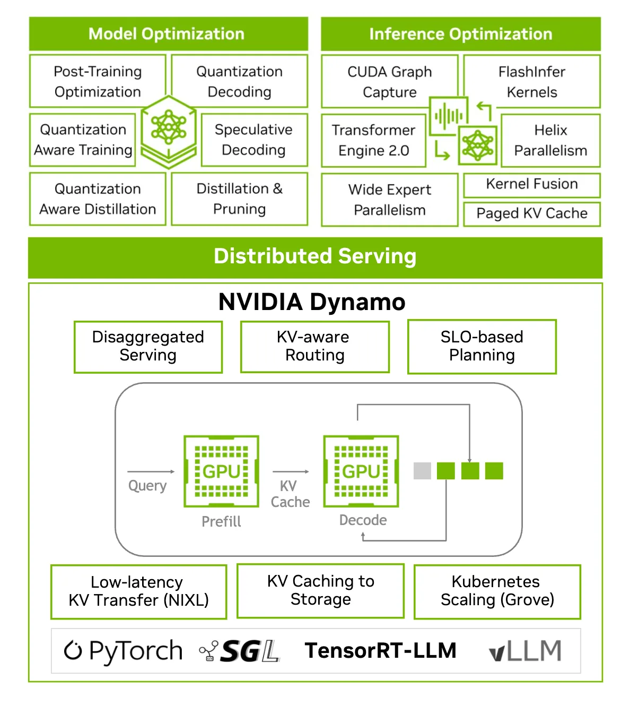
A developer-ready programmable rack-scale platform面向开发者的可编程机架级平台
NVIDIA’s architecture is designed from the ground up to maximize platform software performance and developer usability at rack scale. By integrating platform software and developer experience directly into the architecture, the Vera Rubin platform is not only powerful, but practical to deploy and program. Developers can focus on models, agents, and services rather than infrastructure complexity, while operators retain control over performance, reliability, and efficiency at AI factory scale.
NVIDIA 的架构从底层设计，旨在机架规模上最大化平台软件性能和开发者可用性。通过将平台软件和开发者体验直接集成到架构中，Vera Rubin 平台不仅功能强大，而且易于部署和编程。开发者可以专注于模型、智能体和服务，而非基础设施的复杂性，同时运维人员能够在 AI 工厂规模下保持对性能、可靠性和效率的控制。
6. Operating at AI factory scale6. 以 AI 工厂规模运行
Operating an AI factory at scale requires more than raw performance. It demands systems that can run continuously, securely, efficiently, and predictably in real-world data center environments. The Vera Rubin platform is engineered not only to deliver breakthrough compute capability, but to sustain it over time through intelligent reliability, full-stack security, energy-aware design, and a mature rack ecosystem. Together, these capabilities ensure that AI factories built on the Vera Rubin platform can scale rapidly, operate with minimal disruption, and convert power, infrastructure, and silicon into usable intelligence at industrial scale.
大规模运营 AI 工厂需要的不仅仅是原始性能，还需要能够在实际数据中心环境中持续、安全、高效且可预测运行的系统。Vera Rubin 平台的设计不仅旨在提供突破性的计算能力，更通过智能可靠性、全栈安全、节能意识设计以及成熟的机架生态系统，确保这一能力能够长期维持。这些能力共同确保基于 Vera Rubin 平台构建的 AI 工厂能够快速扩展、以最少中断运行，并将电力、基础设施和硅晶片转化为工业规模的可利用智能。
Deployment and operations部署与运维
NVIDIA Mission Control accelerates every aspect of AI factory operations, from configuring Vera Rubin NVL72 deployments to integrating with facilities to managing clusters and workloads. Enabled by intelligent, integrated software, enterprises gain improved control over cooling and power events and redefine infrastructure resiliency. Mission Control enables faster response with rapid leak detection, unlocks access to NVIDIA’s latest efficiency innovations, and maximizes AI factory productivity with autonomous recovery.
NVIDIA Mission Control 加速了 AI 工厂运营的方方面面，从配置 Vera Rubin NVL72 部署到与设施集成，再到管理集群和工作负载。借助智能集成的软件，企业能够更好地控制冷却和电力事件，并重新定义基础设施的弹性。Mission Control 通过快速泄漏检测实现更快的响应，解锁 NVIDIA 最新的能效创新，并通过自主恢复最大化 AI 工厂的生产力。
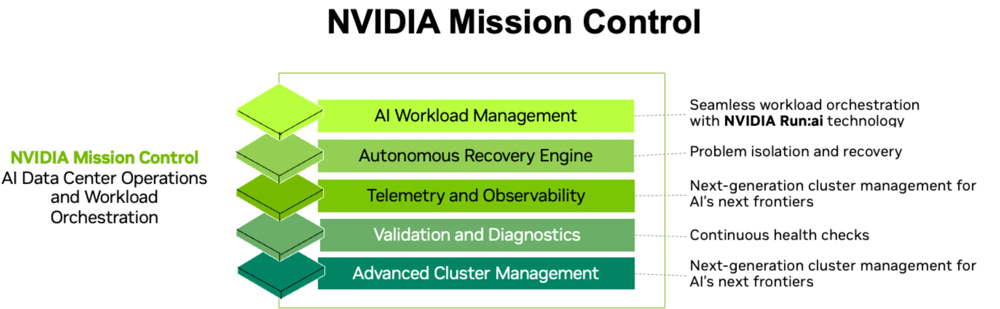
Mission Control offers a validated implementation for enterprises to simplify and scale how AI factories are deployed and operated throughout the entire cluster lifecycle:
任务控制为企业提供了一个经过验证的实现方案，以简化并扩展 AI 工厂在整个集群生命周期中的部署和运营：
- Seamless workload orchestration: Empower model builders with effortless and simplified workload management with NVIDIA Run:ai functionality.
无缝的工作负载编排：借助 NVIDIA Run:ai 功能，让模型构建者能够轻松、简化地管理工作负载。 - Power optimizations: Balance power requirements and tune GPU performance for various workload types with developer-selectable controls.
功耗优化：通过开发者可选的控制选项，平衡功耗需求，并针对不同类型的工作负载调整 GPU 性能。 - Autonomous recovery engine: Identify, isolate, and recover from problems without manual intervention for maximum productivity and infrastructure resiliency.
自主恢复引擎：无需人工干预即可识别、隔离并从问题中恢复，从而最大化生产力和基础设施的弹性。 - Customizable dashboards: Track key performance indicators with access to critical telemetry data about your cluster and easy-to-set dashboards
可定制仪表盘：通过访问集群的关键遥测数据跟踪关键性能指标，并轻松设置仪表盘 - Continuous health checks: Validate hardware and cluster performance throughout the life cycle of your infrastructure.
持续健康检查：在基础设施的整个生命周期中验证硬件和集群性能。
Enterprise software and lifecycle support 企业级软件与生命周期支持
NVIDIA AI Enterprise provides the enterprise-grade software foundation required to operate AI factories at scale. It delivers a validated, supported software stack that spans application development libraries, frameworks, and microservices, as well as infrastructure software for GPU management. It enables predictable performance, security, and stability for production AI deployments.
NVIDIA AI Enterprise 提供了大规模运营 AI 工厂所需的企业级软件基础。它提供经过验证和支持的软件堆栈，涵盖应用开发库、框架和微服务，以及用于 GPU 管理的基础设施软件。它为生产级 AI 部署提供了可预测的性能、安全性和稳定性。
![Layered diagram of the NVIDIA AI Enterprise software suite The top layer shows application development libraries, frameworks, and microservices, including NVIDIA NIM and NeMo, as well as performance - optimized, prepackaged community, NVIDIA, and partner AI models. The infrastructure software layer includes operators for GPU clusters and Kubernetes, and GPU, networking, and virtualization drivers. The entire suite is called NVIDIA AI Enterprise, illustrating how application and infrastructure software support scalable AI factory deployments.](../assets/network-asset-image-30-png-20260521115831-xtrv3wh.webp "Figure 27. NVIDIA AI Enterprise software suite for AI factories 图 27. 适用于 AI 工厂的 NVIDIA AI Enterprise 软件套件")
For agentic AI development, NVIDIA AI Enterprise includes NVIDIA NIM, NeMo, and other containerized libraries and microservices that enable optimized inference, model training, and customization through standardized APIs. With support for NVIDIA, partner, and community AI models, NIM microservices enable enterprises to deploy agentic AI capabilities faster.
对于代理型 AI 开发，NVIDIA AI Enterprise 包含 NVIDIA NIM、NeMo 及其他容器化库和微服务，通过标准化 API 实现优化的推理、模型训练和定制化。借助对 NVIDIA、合作伙伴及社区 AI 模型的支持，NIM 微服务使企业能够更快地部署代理型 AI 能力。
Additionally, application development SDKs, frameworks, and libraries translate the Vera Rubin platform’s architectural capabilities into performance improvements. CUDA, Transformer Engine, cuDNN, and related libraries are validated as an accelerated stack, ensuring that hardware advances are automatically realized by higher-level frameworks and services.
For infrastructure management, NVIDIA AI Enterprise integrates with Kubernetes through purpose-built operators and validated GPU, networking, and virtualization drivers. These components enable secure multi-tenant operation, workload orchestration, and cluster-wide observability, and allow operators to maximize utilization while maintaining reliability and compliance.
Delivered with long-term support, regular security updates, and compatibility validation across hardware generations, NVIDIA AI Enterprise serves as the software backbone of NVIDIA AI factories. It transforms rack-scale systems into a programmable, secure, and operable production platform across data center, cloud, and edge environments.
NVIDIA AI Enterprise 提供长期支持、定期安全更新以及跨硬件代际的兼容性验证，作为 NVIDIA AI 工厂的软件支柱，它将机架级系统转变为跨数据中心、云端和边缘环境的可编程、安全且可操作的生产平台。
NVIDIA AI Enterprise is supported by a wide ecosystem of partners, including solution integrators, data and enterprise platforms, hybrid and multi-cloud providers, and AIOps solutions. It integrates seamlessly with existing enterprise software stacks to enable production grade AI and accelerate time to market.
Reliability, availability, and serviceability
AI factories are no longer batch systems that can afford maintenance windows. They are always-on environments running continuous training, real-time inference, retrieval, and analytics. Vera Rubin NVL72 is engineered for this reality, introducing a rack-scale RAS architecture designed to maximize uptime, improve goodput, the amount of useful AI work actually completed over time, and ensure predictable completion of long-running AI workloads.
In this context, goodput reflects how effectively the system converts powered-on time into finished training steps, completed inference requests, and delivered tokens, without losses from job restarts, checkpoint rollbacks, stragglers, or performance degradation caused by component faults. Even brief interruptions or localized failures can materially reduce goodput when workloads span thousands of GPUs and run for days or weeks.
Resiliency in the Vera Rubin platform is designed end to end, spanning silicon, interconnect, and physical system architecture. The result is a unified, intelligent approach to reliability that allows the system to isolate faults, reroute traffic, and continue executing workloads without interruption, enabling zero planned downtime at rack scale while preserving sustained throughput and predictable job completion.
Rack-scale resiliency: Designed from the ground up
Vera Rubin NVL72 is built on a third-generation NVIDIA MGX rack design that treats reliability and serviceability as first-order architectural requirements. Compute trays, NVLink switch trays, and power and cooling infrastructure are modular, hot-swappable, and designed for in-field replacement without draining racks or interrupting active workloads.
As shown in the animation below, a cable-free, hose-free, fanless compute tray architecture eliminates many manual PCIe, networking, and management connections within the tray, removing common assembly and service friction seen in prior cabled tray designs. This mechanical simplification enables up to 18x faster assembly compared with previous generation tray architectures and significantly reduces services time during in-field maintenance, lowering deployment time and ongoing operational overhead.
A mature ecosystem of more than 80 MGX partners ensures global manufacturability, service readiness, and scalable deployment, allowing AI factories to ramp quickly while maintaining consistent reliability at scale.
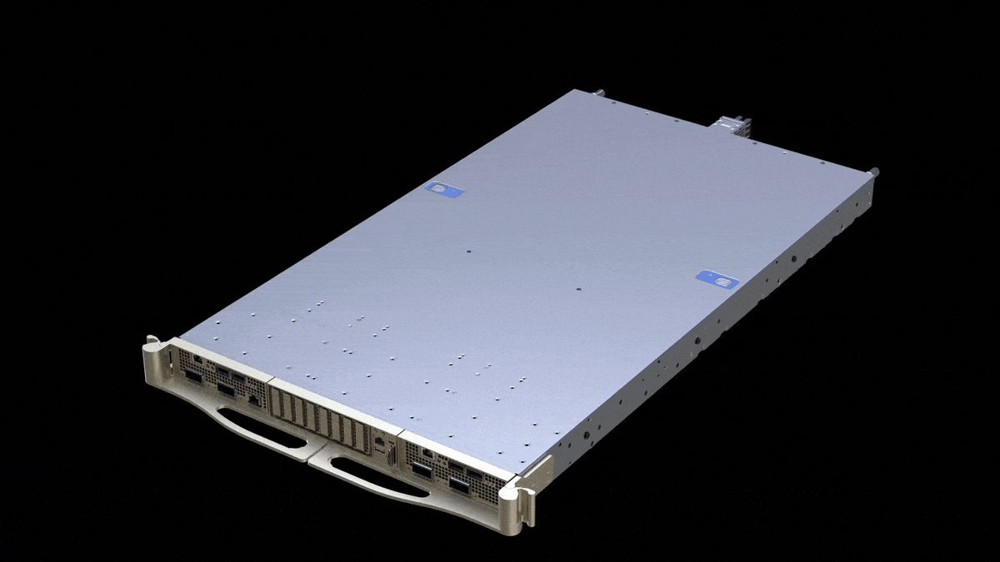
Intelligent resiliency across the interconnect
At the system level, NVIDIA NVLink Intelligent Resiliency enables racks to remain fully operational during maintenance, partial population, or component replacement. Using software-defined routing and intelligent failover, traffic is dynamically rerouted around faults without disrupting active training or inference jobs.
This capability is critical as AI factories scale to thousands of GPUs. Rather than treating interruptions as stop-the-world events, the system adapts in real time, maintaining high utilization and predictable performance even as components are serviced or replaced to improve goodput.
Silicon-level health monitoring with zero downtime零宕机时间的硅级健康监控
At the heart of this architecture is the Rubin GPU’s second-generation Reliability Availability and Scalability Engine (RAS), which delivers continuous, in-system health monitoring without taking GPUs offline. Health checks are performed during idle execution windows, enabling full diagnostics with no impact to running workloads.
The RAS engine supports in-field SRAM repair and zero-downtime self-testing during execution, increasing effective mean time between failures and improving overall system yield. This capability is especially important for long-running training jobs and persistent inference services, where unplanned interruptions can be costly or unacceptable.
Vera CPUs complement GPU-level resiliency with in-system CPU core validation, reduced diagnostic times, and SOCAMM LPDDR5X memory designed for improved serviceability and fault isolation.
Predictive operations at AI factory scale
These hardware capabilities are paired with NVIDIA AI-powered predictive management, which analyzes thousands of hardware and software telemetry signals across the rack. Potential issues are identified early, localized precisely, and addressed proactively. Operators can rebalance workloads, adjust checkpoint strategies, activate standby capacity, or schedule maintenance without impacting service-level objectives.
这些硬件能力与 NVIDIA AI 驱动的预测性管理相配合，能够分析机架内数千个硬件和软件遥测信号。潜在问题会被及早识别、精确定位并主动处理。操作人员可以重新平衡工作负载、调整检查点策略、激活备用容量或安排维护，而不会影响服务水平目标。
Together, these capabilities transform RAS from a reactive process into an intelligent, predictive system that minimizes downtime, reduces operational complexity, and ensures AI workloads complete on schedule.
这些能力共同将 RAS 从一个被动过程转变为一个智能预测系统，从而最大限度地减少停机时间、降低运营复杂性，并确保 AI 工作负载按时完成。
With Vera Rubin NVL72, reliability is no longer a limiting factor for scale. From silicon to system, the platform is engineered to keep AI factories running continuously, efficiently, and predictably at unprecedented scale.
搭载 Vera Rubin NVL72，可靠性不再成为规模扩展的制约因素。从芯片到系统，该平台的设计让 AI 工厂能够以前所未有的规模持续、高效且可预测地运行。
Full stack confidential computing全栈机密计算
As AI factories move into production, security requirements expand from protecting individual devices to protecting entire systems operating continuously at scale. Modern AI workloads routinely process proprietary training data, regulated content, and high-value models, often in shared or cloud environments where infrastructure cannot be implicitly trusted. Meeting these requirements demands security that spans silicon, interconnect, and system software, without introducing performance penalties or operational friction.
随着 AI 工厂进入生产阶段，安全需求从保护单个设备扩展到保护持续大规模运行的整体系统。现代 AI 工作负载通常处理专有训练数据、受监管内容和高价值模型，且常运行在共享或云环境中，这些环境中的基础设施无法被默认信任。满足这些需求需要跨越芯片、互连和系统软件的安全防护，同时不能引入性能损失或操作摩擦。
Vera Rubin NVL72 was designed with full-stack confidential computing as a foundational capability, extending trust from individual components to the entire rack.
Vera Rubin NVL72 在设计上将全栈机密计算作为基础能力，将信任从单个组件扩展到整个机架。
Third–generation confidential computing: rack-level security第三代机密计算：机架级安全
As shown in the figure below, Vera Rubin NVL72 extends confidential computing beyond individual devices to create a unified, rack-scale trusted execution environment spanning CPUs, GPUs, and interconnects. This design enables sensitive AI workloads to run securely at scale with near-native performance, even in shared or cloud environments.
如下图所示，Vera Rubin NVL72 将机密计算从单个设备扩展到创建统一的、机架级可信执行环境，涵盖 CPU、GPU 和互连。该设计使敏感 AI 工作负载能够在共享或云环境中以接近本机性能安全地大规模运行。
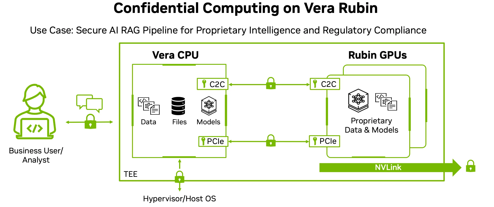
AI factories increasingly process proprietary data, regulated content, and mission-critical models that cannot be exposed, even to the infrastructure they run on. Vera Rubin NVL72 addresses this requirement by delivering end-to-end encryption across CPU-to-GPU, GPU-to-GPU, and device I/O paths, allowing enterprises to deploy secure training, inference, retrieval, and analytics pipelines without sacrificing throughput or latency.
人工智能工厂越来越多地处理不能暴露的专有数据、受监管内容和关键任务模型，甚至对它们所运行的基础设施也不能暴露。Vera Rubin NVL72 通过提供跨 CPU 到 GPU、GPU 到 GPU 以及设备 I/O 路径的端到端加密来满足这一需求，使企业能够在部署安全的训练、推理、检索和分析管道的同时，不牺牲吞吐量或延迟。
From device-level security to rack-scale trust从设备级安全到机架级信任
NVIDIA has advanced GPU security over multiple generations. Hopper introduced high-performance confidential computing for GPUs. Blackwell expanded these capabilities, eliminating the traditional tradeoff between security and performance. Vera Rubin NVL72 completes this progression by unifying CPU and GPU security into a single unified trust domain across the entire rack.
英伟达在多代产品中推进了 GPU 安全。Hopper 引入了高性能的 GPU 机密计算。Blackwell 扩展了这些能力，消除了安全与性能之间的传统权衡。Vera Rubin NVL72 通过将 CPU 和 GPU 安全统一为跨越整个机架的单一信任域，完成了这一演进。
This rack-level approach ensures that proprietary models, training data, embeddings, and inference prompts remain protected not only from other tenants, but also from the underlying cloud provider infrastructure itself.
这种机架级方法确保专有模型、训练数据、嵌入和推理提示不仅免受其他租户的侵扰，而且也不受底层云提供商基础设施本身的威胁。
Cryptographic attestation and verifiable compliance
Vera Rubin NVL72 integrates with NVIDIA remote attestation services (NRAS) to provide cryptographic proof of system integrity. Organizations can verify that CPUs, GPUs, NICs, firmware, drivers, and the running workload match known-good reference measurements supplied by NVIDIA, achieving zero trust architecture at rack scale.
Vera Rubin NVL72 与 NVIDIA 远程证明服务（NRAS）集成，提供系统完整性的密码学证明。组织可以验证 CPU、GPU、NIC、固件、驱动程序以及正在运行的工作负载是否与 NVIDIA 提供的已知良好参考测量值匹配，从而在机架规模上实现零信任架构。
The platform supports both on-demand attestation through NVIDIA Attestation Cloud services and deployment models that require cached results or fully air-gapped operation. This flexibility allows enterprises to meet stringent regulatory, compliance, and data-sovereignty requirements while maintaining operational efficiency.
该平台既支持通过 NVIDIA 证明云服务进行按需证明，也支持需要缓存结果或完全气隙操作的部署模式。这种灵活性使企业能够在满足严格监管、合规和数据主权要求的同时，保持运营效率。
Unified security across the entire rack整个机架的统合安全性
Vera Rubin NVL72 establishes a unified security domain using a combination of industry standards and NVIDIA technologies, including:
Vera Rubin NVL72 通过结合行业标准与 NVIDIA 技术建立统一的安全域，包括：
- TEE Device Interface Security Protocol (TDISP) for device-level trust
设备级信任的 TEE 设备接口安全协议（TDISP） - PCIe integrity and data encryption (IDE) for secure I/O
用于安全 I/O 的 PCIe 完整性与数据加密（IDE） - NVLink-C2C encryption for protected CPU-to-GPU and CPU-to-CPU communication
用于保护 CPU 到 GPU 及 CPU 到 CPU 通信的 NVLink-C2C 加密 - NVLink encryption for secure GPU-to-GPU data movement at scale
NVLink 加密用于大规模 GPU 间数据的安全移动
Together, these capabilities enable a fully encrypted, unified trusted execution environment designed to scale to the world’s largest AI models and most demanding enterprise workloads. From the user’s device to cloud-scale AI factories, Vera Rubin NVL72 delivers full-stack confidential computing that protects every type of data, even the most sensitive workloads, wherever it runs.
这些功能共同实现了一个完全加密、统一的信任执行环境，旨在扩展到全球最大的 AI 模型和最苛刻的企业工作负载。从用户设备到云规模的 AI 工厂，Vera Rubin NVL72 提供了全栈机密计算，保护所有类型的数据，即使是最敏感的工作负载，无论在哪里运行。
Energy for tokens: thermal and power innovations 为 token 提供能量：散热与功耗创新
AI factories can draw hundreds of megawatts of power. Yet by the time that power reaches the GPUs doing the work, roughly 30% of it is lost to power conversion, distribution, and cooling. This energy is consumed by systems that support compute but do not directly generate tokens, the fundamental unit of AI output. Known as parasitic energy, it represents billions of dollars in wasted potential revenue at scale.
AI 工厂可消耗数百兆瓦电力。然而当电力到达执行计算任务的 GPU 时，约 30%已在电源转换、分配和冷却过程中损耗。这部分能量被用于支持计算的系统，却并未直接生成 AI 输出的基本单位——令牌。这种被称为寄生能源的损耗，在规模化运营中相当于数十亿美元潜在收益的浪费。
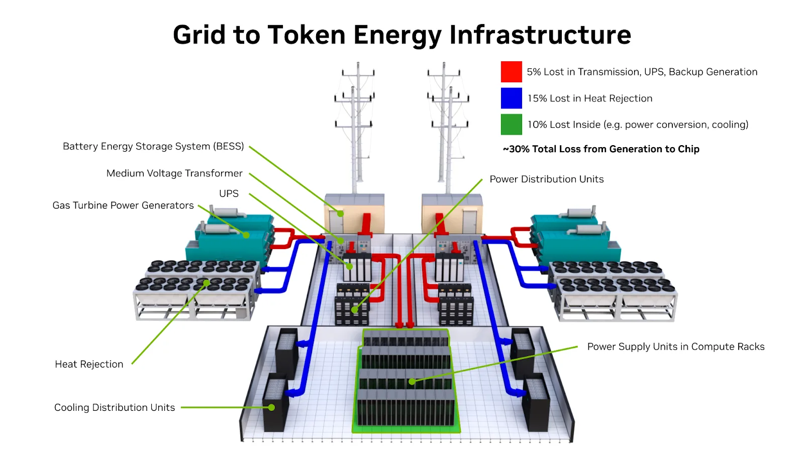
Every watt wasted is a watt that could have been used to generate tokens. As AI becomes a primary engine of knowledge creation, improving energy efficiency directly translates into higher throughput, lower cost per token, and better sustainability.
每一瓦特的浪费，原本都可以用于生成令牌。随着人工智能成为知识创造的主要引擎，提升能源效率直接转化为更高的吞吐量、更低的每令牌成本以及更强的可持续性。
Cutting parasitic energy means delivering more usable power to GPUs, the engines that produce tokens. The Vera Rubin platform has been engineered to minimize these hidden costs through simpler power paths, higher-efficiency cooling, and system-level orchestration designed for always-on AI factories.
削减寄生能耗意味着为生成令牌的引擎——GPU——提供更多可用电力。Vera Rubin 平台通过简化电源路径、提升冷却效率以及专为始终在线的 AI 工厂设计的系统级编排，最大限度地减少了这些隐藏成本。
Traditional data centers heavily rely on air cooling, which consumes significant energy to move and condition air. Similar to Blackwell, Vera Rubin NVL72 systems use warm-water, single-phase direct liquid cooling (DLC) with a 45-degree Celsius supply temperature. Liquid cooling captures heat far more efficiently than air, and by maintaining Blackwell’s 45-degree cooling temperature, data centers can cool water with ambient air. This translates to significant cost, complexity, and power savings relative to other solutions that require 35-degree liquid cooling.
传统数据中心严重依赖空气冷却，这需要消耗大量能源来移动和处理空气。与 Blackwell 类似，Vera Rubin NVL72 系统采用 45 摄氏度供水温度的温水单相直接液冷（DLC）。液冷比空气冷却更高效地捕获热量，并且通过维持 Blackwell 的 45 摄氏度冷却温度，数据中心可以利用环境空气冷却水。与其他需要 35 摄氏度液冷解决方案相比，这带来了显著的节省成本、降低复杂性和节约电力的优势。
Building on Blackwell’s liquid-cooled design, Vera Rubin further increases cooling efficiency by nearly doubling thermal performance in the same rack footprint without introducing new cooling complexities or costs. This ensures rapid heat removal under sustained, extreme workloads, preventing thermal throttling and keeping performance consistent. Less energy spent on cooling means more energy available for compute and higher sustained utilization across the AI factory.
在 Blackwell 液冷设计的基础上，Vera Rubin 进一步提升了冷却效率，在相同机柜占地面积内将热性能提升近一倍，且无需引入新的冷却复杂性或成本。这确保了在持续高负载下能快速散热，防止热节流，保持性能稳定。冷却能耗的降低意味着更多能量可用于计算，从而在 AI 工厂中实现更高的持续利用率。
Rack-level power smoothing and site-level energy storage机架级功率平滑与站点级能量存储
AI workloads are inherently dynamic. Large-scale training introduces synchronized all-to-all communication phases with megawatt-scale power ramps, while inference generates sharp, bursty demand spikes.
人工智能工作负载本质上具有动态性。大规模训练会引入同步的全对全通信阶段，产生兆瓦级的功率波动，而推理则会产生尖锐且突发的需求峰值。
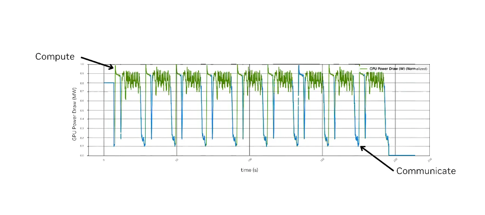
Without mitigation, these swings can stress power delivery networks, violate grid constraints, or force operators to overbuild infrastructure or throttle GPUs, both of which waste energy and limit deployable compute.
若不加以缓解，这些波动可能会给电力输送网络带来压力，违反电网限制，或迫使运营商过度建设基础设施或限制 GPU 运行，这两种做法都会浪费能源并限制可部署的计算能力。
Vera Rubin AI factories address this challenge with a multi-layered approach.
Vera Rubin 人工智能工厂采用多层方法应对这一挑战。
![Diagram illustrating a three-layer approach to managing AI factory power dynamics. The left panel shows GPU Power Smoothing using ramp rates and power limits at the GPU level. The center panel shows Active Power Flooring, where software dynamically adds or shifts workloads to maintain a stable power floor. The right panel shows Rack-Level Energy Storage, which captures and reuses excess energy to further stabilize power delivery. Together, these layers reduce peak power, increase compute density, and improve overall energy efficiency.](../assets/network-asset-Rubin-Fig-31-png-20260521115831-gt7zfkv.webp "Figure 32. Multi-layer power smoothing and energy storage for AI factories 图 32. AI 工厂的多层功率平滑与储能")
At the rack level, Vera Rubin NVL72 evens out power swings with power smoothing and incorporates approximately 6x more local energy buffering than Blackwell Ultra, absorbing rapid power transients directly at the source. The figure below shows the effect of rack-level power smoothing in operation: synchronized AI workload power swings are reshaped into controlled ramps bounded by a stable power ceiling and floor, with local energy buffering absorbing rapid transients at the source. The result is a smoother, more predictable power profile that aligns GPU execution with data center and grid constraints.
在机架层面，Vera Rubin NVL72 通过功率平滑技术均衡功率波动，并搭载了比 Blackwell Ultra 多约 6 倍的本地能量缓冲，直接在源头吸收快速功率瞬变。下图展示了机架级功率平滑在运行中的效果：同步化的人工智能工作负载功率波动被重塑为受控斜坡，由稳定的功率上限和下限限定范围，同时本地能量缓冲在源头吸收快速瞬变。最终形成更平滑、更可预测的功率曲线，使 GPU 执行与数据中心及电网约束条件保持一致。
![Time-series chart showing GPU power draw over time with rack-level power smoothing enabled. The figure illustrates controlled ramp-up and ramp-down behavior between a defined power ceiling and power floor. Rapid compute-driven power spikes are absorbed by local energy buffering, smoothing transients and maintaining stable power delivery. Shaded regions highlight ramp periods where buffering mitigates abrupt changes, demonstrating how rack-level energy storage evens out synchronized AI workload power swings.](../assets/network-asset-Rubin-Fig-32-png-20260521115831-mw3nafn.webp "Figure 33. Rack-level power smoothing with local energy buffering 图 33. 机架级功率平滑与本地能量缓冲")
The figure below breaks this behavior down into the three complementary mechanisms that make it possible. Together, controlled ramps, enforced limits, and local energy storage operate as a coordinated system, reducing peak demand, limiting ramp-rate violations, and stabilizing power delivery without throttling performance. These mechanisms allow AI factories to plan around sustained power rather than worst-case spikes, directly increasing deployable compute per megawatt.
下图将该行为分解为三种互补机制，这些机制共同实现了这一效果。受控斜坡、强制限制和本地储能三者作为一个协调系统协同运作，在不降低性能的情况下，降低峰值需求、限制斜坡速率违规并稳定电力传输。这些机制使人工智能工厂能够围绕持续功率而非最坏情况下的尖峰进行规划，从而直接增加每兆瓦的可部署计算能力。
![Three-panel conceptual diagram illustrating how power smoothing stabilizes AI workload power demand. The left panel, labeled “Ramps,” shows controlled ramp-up and ramp-down phases that reduce abrupt changes in power draw. The middle panel, labeled “Limits,” shows enforced upper and lower bounds that cap maximum and minimum power consumption. The right panel, labeled “Storage,” shows energy being stored and released to smooth power draw over time. Together, these mechanisms even out transients, average peaks, and stabilize power delivery for AI factories.](../assets/network-asset-Rubin-Fig-33-1-png-20260521115831-msng3dd.webp "Figure 34. Power-smoothing mechanisms: ramps, limits, and storage 图 34. 功率平滑机制：斜坡、限制和存储")
At the site level, battery energy storage systems (BESS) provide fast-response capacity to handle grid events and maintain stability without interrupting workloads.
在站点层面，电池储能系统（BESS）提供快速响应能力，以应对电网事件并维持稳定性，同时不中断工作负载。
AI infrastructure power management works by using the NVIDIA Domain Power Service (DPS) to provide power domain-level controls and enable the NVIDIA Workload Power Profile Solution (WPPS) for each job to optimize performance per watt for schedulers like SLURM and NVIDIA Mission Control. Mission Control provides cluster-wide telemetry, coordinated power-aware policies, and integration with facilities (including energy-optimized power profiles and building management system interfaces) for efficient large-scale operations. Low-level GPU telemetry, power capping, and health control are handled through NVIDIA System Management Interface (SMI) and NVIDIA Data Center GPU Management (DCGM) APIs.
AI 基础设施的电源管理通过使用 NVIDIA 域电源服务（DPS）提供电源域级别的控制，并为每个作业启用 NVIDIA 工作负载电源配置解决方案（WPPS），从而为 SLURM 和 NVIDIA Mission Control 等调度器优化每瓦性能。Mission Control 提供集群范围的遥测、协调的电源感知策略以及与设施的集成（包括能源优化的电源配置和楼宇管理系统接口），以实现高效的大规模运营。底层 GPU 遥测、功率上限和健康控制通过 NVIDIA 系统管理接口（SMI）和 NVIDIA 数据中心 GPU 管理（DCGM）API 进行处理。
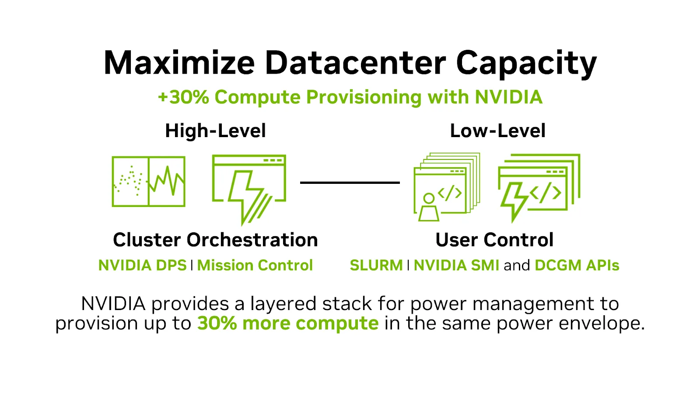
By reducing peak-to-average power ratios, Vera Rubin NVL72 enables operators to provision more GPUs per megawatt of available grid capacity, and plan around sustained power rather than worst-case spikes. This improves utilization, lowers infrastructure overhead, and directly increases tokens produced per unit of energy.
通过降低峰均功率比，Vera Rubin NVL72 使运营商能够在每兆瓦可用电网容量下配置更多 GPU，并围绕持续功率而非最坏情况峰值进行规划。这提高了利用率，降低了基础设施开销，并直接增加了每单位能量产生的 token 数量。
Power optimization and grid awareness for sustainable AI factory scale面向可持续 AI 工厂规模的功耗优化与电网感知能力
AI factories do not operate in isolation. They are tightly coupled to utility grids that impose limits on ramp rates, peak demand, and operational stability. Managing these constraints manually is impractical at scale and can result in forced throttling or downtime. NVIDIA is building a Vera Rubin NVL72 AI factory research center in Manassas, Va., to optimize and validate the reference design for 100 MW up to gigawatt-scale AI factories. The reference design integrates the Vera Rubin NVL72 rack designs at scale with power and cooling infrastructure and implements APIs to connect grid power controls with the AI factory telemetry and controls.
AI 工厂并非孤立运行。它们与电网紧密耦合，而电网对爬坡速率、峰值需求和运行稳定性有严格限制。在大规模部署时，手动管理这些约束不切实际，可能导致强制降频或停机。NVIDIA 正在弗吉尼亚州马纳萨斯建设一座 Vera Rubin NVL72 AI 工厂研究中心，以优化并验证从 100 MW 到吉瓦级 AI 工厂的参考设计。该参考设计将大规模 Vera Rubin NVL72 机架设计与供电和冷却基础设施集成，并实现 API 以将电网功率控制与 AI 工厂遥测及控制系统连接。
Vera Rubin NVL72 AI factories integrate the NVIDIA Omniverse DSX reference design for software-defined power control. DSX Flex translates electric utility signals into actionable cluster-level power events. DSX Boost enforces ramp-rate compliance and dynamically orchestrates workload power budgets across the factory.
Vera Rubin NVL72 AI 工厂集成了 NVIDIA Omniverse DSX 参考设计，实现软件定义的功率控制。DSX Flex 将电力公用事业信号转换为可操作的集群级功率事件。DSX Boost 强制执行爬坡速率合规性，并跨工厂动态编排工作负载功率预算。
Together, these capabilities allow AI factories to remain compliant with grid requirements while keeping workloads running at high utilization. By coordinating power behavior across racks, nodes, and jobs, DSX enables Vera Rubin NVL72 AI factories to provision up to 30% more GPU capacity within the same power envelope, directly increasing token output and revenue potential.
这些能力共同使 AI 工厂能够满足电网要求，同时保持工作负载在高利用率下运行。通过协调机架、节点和作业之间的功率行为，DSX 使 Vera Rubin NVL72 AI 工厂能够在相同功率范围内提供高达 30%的额外 GPU 容量，直接增加 Token 输出和收入潜力。
A seamless transition enabled by a mature ecosystem成熟生态系统实现的无缝过渡
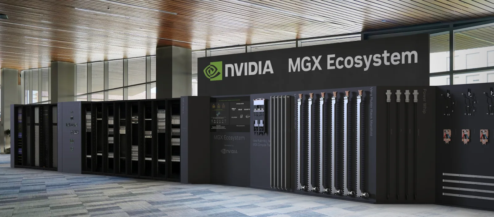
Vera Rubin NVL72 is built on the third-generation NVIDIA MGX rack architecture, preserving the same physical rack footprint while advancing performance, reliability, and serviceability. This continuity is intentional. By evolving the platform without forcing disruptive infrastructure changes, NVIDIA enables exponential gains in AI capability while maintaining a predictable and efficient deployment model.
Vera Rubin NVL72 基于第三代 NVIDIA MGX 机架架构构建，在保持相同物理机架尺寸的同时，提升了性能、可靠性和可维护性。这种延续性是刻意的。通过在不强制进行破坏性基础设施变革的情况下演进平台，NVIDIA 能够在维持可预测且高效部署模式的同时，实现 AI 能力的指数级增长。
With Vera Rubin NVL72 delivering up to 3.6 exaFLOPS of AI inference compute per rack, the challenge is no longer just performance, but how quickly that performance can be deployed at scale. The MGX design ensures that power, cooling, mechanical integration, and service workflows are already proven, allowing partners and operators to focus on accelerating time to production rather than redesigning infrastructure.
随着 Vera Rubin NVL72 每个机架提供高达 3.6 exaFLOPS 的 AI 推理计算能力，挑战已不仅是性能本身，更是如何快速大规模部署这一性能。MGX 设计确保了电源、散热、机械集成和维护工作流程已经过验证，使合作伙伴和运营商能够专注于加速投产，而非重新设计基础设施。
This consistency translates directly into faster ramps. Vera Rubin is supported by a mature ecosystem of more than 80 MGX partners spanning system manufacturers, integrators, and data-center solution providers, many of whom are already ramping the platform. These partners bring hard-earned operational experience from prior generations, reducing risk and accelerating global deployment.
这种一致性直接转化为更快的部署速度。Vera Rubin 得到了超过 80 家 MGX 合作伙伴的成熟生态系统支持，涵盖系统制造商、集成商和数据中心解决方案提供商，其中许多合作伙伴已开始部署该平台。这些合作伙伴从上一代产品中积累了宝贵的运营经验，降低了风险并加速了全球部署。
For data-center operators, this means a smooth transition to Vera Rubin with minimal friction. Existing facilities can adopt the next generation of agentic AI infrastructure without retooling layouts, retraining service teams, or requalifying fundamental rack designs. The result is faster deployment, predictable operations, and the ability to scale AI factories quickly as demand grows.
对于数据中心运营商而言，这意味着向 Vera Rubin 的过渡将顺畅无阻，摩擦降至最低。现有设施可直接部署下一代智能体 AI 基础设施，无需重新调整布局、重新培训服务团队或重新验证基本机架设计。其结果是实现更快的部署、可预测的运维，并能够随需求增长快速扩展 AI 工厂规模。
Vera Rubin’s mature ecosystem ensures that platform innovation does not come at the cost of deployment velocity, enabling enterprises and cloud providers to move from innovation to production at unprecedented speed.
Vera Rubin 成熟的生态系统确保平台创新不会以牺牲部署速度为代价，使企业和云提供商能够以前所未有的速度从创新阶段迈向生产阶段。
Where operations meets performance运维与性能的完美交汇
Taken together, these capabilities define what it means to operate at AI factory scale. Vera Rubin NVL72 combines zero-downtime reliability, full-stack security, energy-aware system design, and a mature rack ecosystem to ensure that performance gains translate into real, sustained output in production environments. By removing operational, power, and deployment bottlenecks, the platform allows AI factories to focus on what matters most: delivering more intelligence per watt, per rack, and per data center. With this foundation in place, the next section examines how Vera Rubin converts these system-level advantages into measurable performance gains at scale.
综合来看，这些能力定义了 AI 工厂规模运营的真正内涵。Vera Rubin NVL72 将零停机可靠性、全栈安全、能耗感知系统设计以及成熟的机架生态系统融为一体，确保性能提升能够转化为生产环境中真实且持续的产出。通过消除运维、功耗和部署瓶颈，该平台使 AI 工厂能够聚焦于最核心的目标：以每瓦特、每机架、每数据中心为单位提供更多智能。基于这一基础，下一章节将探讨 Vera Rubin 如何将这些系统级优势转化为可衡量的规模性能提升。
7. Performance and efficiency at scale 7. 大规模性能与效率
A useful way to understand the performance impact of Vera Rubin NVL72 is through the lens of model evolution. The industry is simultaneously pushing toward extreme-scale training, exemplified by 10 trillion parameter mixture-of-experts (MoE) models, and toward low-latency inference required for reasoning agents and complex workflows. At this scale, the challenge is no longer peak throughput in isolation, but how efficiently an entire platform converts infrastructure into sustained model progress.
As the industry has advanced from Hopper to Blackwell and now Rubin, performance gains increasingly come from architectural efficiency rather than brute-force scaling. Vera Rubin NVL72 shifts the performance frontier on both ends, delivering the architectural density required to train giant MoE models without unmanageable cluster sprawl, while also enabling the sustained execution efficiency needed for real-time, high-reasoning inference.
Unlocking the 10T MoE era via extreme co-design
Training the next generation of frontier models requires extreme co-design. As parameter counts continue to climb, the industry is rapidly approaching a point where 10T MoE architectures become operationally viable. These models offer enormous capacity and more efficient inference, but they introduce substantial communication overhead during training due to dynamic expert routing and frequent all-to-all exchanges.
训练下一代前沿模型需要极致的协同设计。随着参数数量持续攀升，行业正迅速逼近 10 万亿参数混合专家（MoE）架构在运营层面可行的临界点。这类模型具备巨大的容量和更高效的推理能力，但由于动态专家路由和频繁的全对全交换，训练过程中会引入大量的通信开销。
The Vera Rubin platform is designed to absorb this overhead through tight co-design across compute, memory, and networking. Higher compute density per rack and more efficient interconnects reduce the cost of synchronization and expert communication, allowing training efficiency to scale rather than collapse as cluster size increases.
Vera Rubin 平台通过计算、内存和网络之间的紧密协同设计来吸收这种开销。更高的每机架计算密度和更高效的互连降低了同步和专家通信的成本，使训练效率能够随着集群规模的扩大而提升，而非下降。
The figure below illustrates the impact of this co-design using a fixed training objective. To train a 10T MoE model on 100 trillion tokens within a one-month window, Vera Rubin NVL72 achieves the target using approximately one-quarter the number of GPUs required by Grace Blackwell NVL72. Instead of scaling out to ever-larger clusters to meet aggressive timelines, Vera Rubin concentrates effective training capacity into fewer GPUs.
下图展示了这种协同设计在固定训练目标下的影响。要在一个月内使用 100 万亿个 token 训练一个 10T MoE 模型，Vera Rubin NVL72 所需的 GPU 数量约为 Grace Blackwell NVL72 的四分之一。Vera Rubin 并非通过扩展至更大规模的集群来满足紧迫的时间表，而是将有效的训练能力集中到更少的 GPU 中。
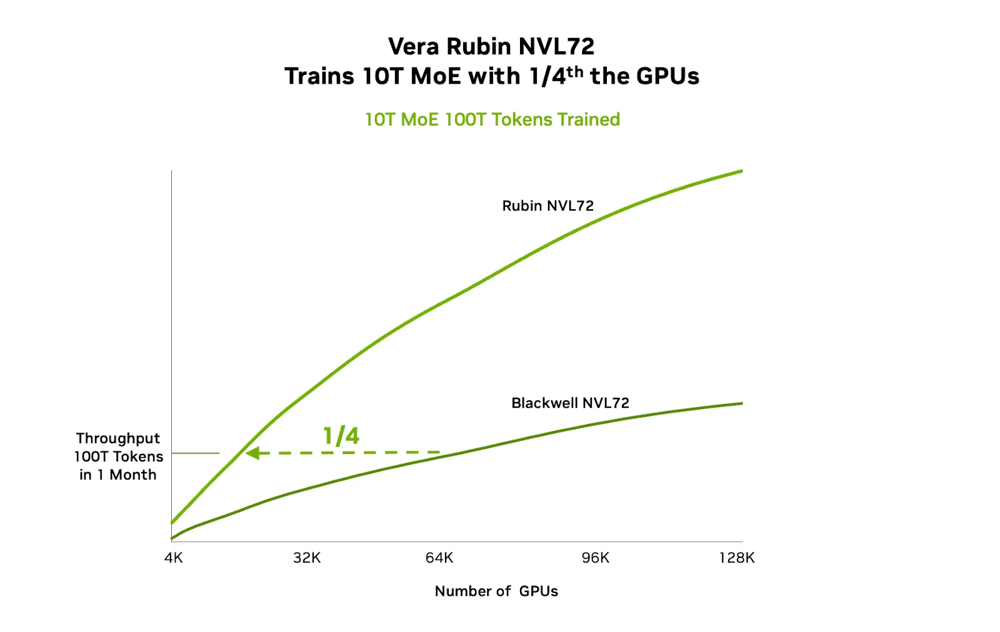
This reduction in required GPU count represents a structural shift in large-scale training. By minimizing cluster sprawl and communication overhead, Vera Rubin NVL72 eliminates much of the complexity that has historically limited MoE scalability. Architectural efficiency, not raw GPU volume, becomes the dominant factor in making 10T-class models practical at scale.
GPU 数量的减少标志着大规模训练中的结构性转变。通过最小化集群规模膨胀和通信开销，Vera Rubin NVL72 消除了历史上限制 MoE 可扩展性的诸多复杂性。使 10T 级模型实现规模化实用的关键因素不再是原始 GPU 数量，而是架构效率。
Real-time reasoning at scale 大规模实时推理
The shift toward multi-agent AI systems fundamentally changes inference behavior. Instead of short, stateless requests, agents now operate with persistent context, continuously exchanging state across turns and across agents. Each request may carry tens of thousands of tokens, including conversation history, tool definitions, structured API schemas, retrieved RAG context, and intermediate outputs from other agents in the workflow. Maintaining responsiveness under this sustained context load requires far more than peak compute, it demands high sustained throughput across compute, memory, and communication.
向多智能体 AI 系统的转变从根本上改变了推理行为。智能体不再执行简短的无状态请求，而是以持久上下文的方式运作，在轮次之间以及不同智能体之间持续交换状态。每个请求可能携带数万个 Token，包括对话历史、工具定义、结构化 API 模式、检索到的 RAG 上下文以及工作流中其他智能体的中间输出。在这种持续上下文负载下保持响应能力，需要的远不止峰值算力，而是对计算、内存和通信的全链路高持续吞吐量。
At the same time, modern “thinking” models, such as Moonshot AI’s Kimi-K2-Thinking, introduce an additional execution phase. Before producing a final response, these models generate long internal reasoning sequences, significantly increasing output token counts. For workloads requiring on the order of 8,000 output tokens, conventional user inference rates, roughly 50 tokens per second per user, translate into multi-minute response times. At scale, this latency compounds across concurrent users, degrading both user experience and system efficiency.
与此同时，Moonshot AI 的 Kimi-K2-Thinking 等现代“思考”模型引入了额外的执行阶段。在生成最终回答之前，这些模型会产生较长的内部推理序列，从而显著增加输出令牌数量。对于需要约 8000 个输出令牌的工作负载，传统用户推理速率（大约每秒每个用户 50 个令牌）会导致数分钟级别的响应时间。在大规模并发场景下，这种延迟会随并发用户数进一步叠加，既损害用户体验，也降低系统效率。
Vera Rubin NVL72 is designed to remove this bottleneck. By sustaining high throughput at elevated interactivity levels, the platform enables reasoning-heavy inference without sacrificing responsiveness. The figure below illustrates this generational shift. On the Kimi-K2-Thinking workload, Vera Rubin NVL72 delivers up to 10x higher token factory throughput per megawatt than the NVIDIA Blackwell GB200 NVL72 system at comparable user interactivity. While prior architectures experience steep throughput collapse as TPS per user increases, Vera Rubin NVL72 maintains efficiency across the operating range required for fluid, interactive reasoning. This allows large 1-trillion-parameter MoE models to serve real-time agentic workloads without the “waiting for thought” penalty.
Vera Rubin NVL72 旨在消除这一瓶颈。通过在高交互性水平下维持高吞吐量，该平台能够在保持响应速度的同时，支持以推理为核心的高负荷推断任务。下图展示了这一代际变革。在 Kimi-K2-Thinking 工作负载下，Vera Rubin NVL72 在相当的用户交互性条件下，每兆瓦的 token 工厂吞吐量较 NVIDIA Blackwell GB200 NVL72 系统提升高达 10 倍。此前架构在每位用户每秒处理事务数（TPS）上升时，吞吐量会急剧下降，而 Vera Rubin NVL72 在流畅交互式推理所需的运行范围内始终保持高效。这使得拥有 1 万亿参数的 MoE 模型能够为实时智能体工作负载提供服务，而无需忍受“等待思考”的延迟惩罚。
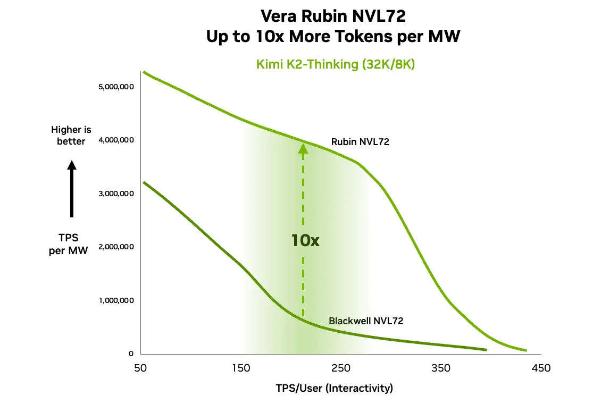
Beyond throughput, Vera Rubin NVL72 fundamentally shifts the economics of reasoning inference. The figure below shows cost per million tokens as a function of output latency for the same workload. For long-context, reasoning-dominated inference, Vera Rubin NVL72 delivers up to 10x lower cost per million tokens compared to Blackwell NVL72.
除了吞吐量，Vera Rubin NVL72 从根本上改变了推理推理的经济性。下图展示了相同工作负载下每百万令牌成本随输出延迟的变化。对于长上下文、推理主导的推理任务，与 Blackwell NVL72 相比，Vera Rubin NVL72 的每百万令牌成本降低了高达 10 倍。
The advantage is most pronounced at the service levels required for interactive agents, where prior platforms may encounter an efficiency wall where costs rise steeply to incrementally improve responsiveness. Vera Rubin remains cost-efficient across this region, transforming long-chain reasoning from a premium capability into a scalable, production-ready service.
这一优势在交互式智能体所需的服务级别上最为显著，此前平台可能在此遭遇效率瓶颈——微幅提升响应速度便会导致成本急剧攀升。而 Vera Rubin 在此区间内始终保持成本效益，将长链推理从高端能力转化为可扩展的生产级服务。
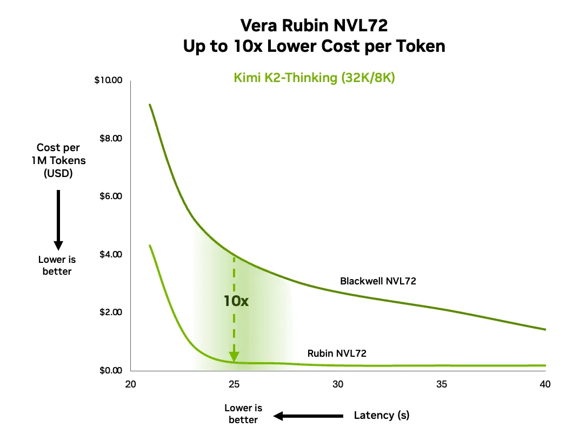
Redefining the Pareto frontier
Together, these results redefine the traditional tradeoff between responsiveness and efficiency in AI inference. Where prior platforms forced operators to choose between low latency and reasonable cost, Vera Rubin NVL72 sustains both simultaneously. This enables large-context, reasoning-heavy models to operate interactively at scale, transforming high-intelligence inference from a premium capability into a production-standard service.
8. Why Vera Rubin is the AI factory platform
AI infrastructure has reached an inflection point. As models evolve toward long-context reasoning, agentic execution, and continuous post-training, performance is no longer determined by any single component. It is determined by how efficiently an entire system converts power, silicon, and data movement into usable intelligence at scale.
Vera Rubin has been purpose-built for this reality.
Vera Rubin 正是为此现实而专门构建的。
Rather than optimizing isolated chips, the Vera Rubin platform treats the data center as the unit of compute. Through extreme co-design across GPUs, CPUs, scale-up and scale-out networking, infrastructure offload, power delivery, cooling, security and system software, Vera Rubin enables AI factories to operate as tightly integrated, predictable, and continuously available systems.
At the execution layer, Rubin GPUs deliver sustained throughput for compute, memory, and communication-dominated workloads. Vera CPUs act as high-bandwidth data engines, streaming data efficiently to the GPUs and accelerating system-level orchestration without becoming a bottleneck. NVLink 6 unifies the rack into a single NVLink domain, enabling predictable performance across all GPUs. BlueField-4 completes the stack by operating the AI factory itself, offloading infrastructure services and enforcing security, isolation, and control at scale. Spectrum-X Ethernet and ConnectX-9 then extend this deterministic behavior beyond the rack, enabling efficient, scalable AI factories across multi-rack deployments.
在执行层，Rubin GPU 为计算、内存和通信密集型工作负载提供持续吞吐量。Vera CPU 充当高带宽数据引擎，高效地将数据流式传输至 GPU，并加速系统级编排，而不成为瓶颈。NVLink 6 将机架统一为单个 NVLink 域，实现所有 GPU 的可预测性能。BlueField-4 通过自主运行 AI 工厂来完成整个技术栈，卸载基础设施服务，并大规模实施安全、隔离与控制。随后，Spectrum-X 以太网和 ConnectX-9 将此确定性行为扩展至机架之外，使跨多机架部署的高效、可扩展 AI 工厂成为可能。
Most importantly, these capabilities are not theoretical. They are delivered as a validated, production-ready platform through the DGX SuperPOD, supported by NVIDIA Mission Control, enterprise software, and a mature MGX ecosystem. This design allows organizations to deploy secure AI factories faster, operate them more reliably, and scale them more efficiently as demand grows.
最重要的是，这些能力并非纸上谈兵。它们作为经过验证、可投入生产的平台，通过 DGX SuperPOD 提供，并得到 NVIDIA Mission Control、企业软件以及成熟的 MGX 生态系统的支持。这种设计使组织能够更快地部署安全的 AI 工厂，更可靠地运行它们，并随着需求增长更高效地扩展规模。
The result is a fundamental shift in AI economics. By maximizing utilization, reducing operational friction, and minimizing wasted power, the Vera Rubin platform lowers the cost per token while increasing tokens per watt and tokens per rack. What once required sprawling, fragile clusters can now be delivered with higher density, higher reliability, and predictable performance.
结果便是 AI 经济性的根本转变。通过最大化利用率、减少运营摩擦以及将浪费的功耗降至最低，Vera Rubin 平台在提高每瓦特令牌数和每机架令牌数的同时，降低了每令牌成本。过去需要庞大、脆弱的集群才能完成的任务，现在可以以更高密度、更高可靠性以及可预测的性能来实现。
The Vera Rubin platform is not just the next generation of accelerated computing. It is the platform that enables AI factories to move from experimentation to industrial-scale intelligence production.
Vera Rubin 平台不仅仅是下一代加速计算平台。它是让 AI 工厂从实验阶段迈向大规模智能生产的平台。
9. Learn more 9. 了解更多
Explore the Vera Rubin platform, Vera CPU, Vera Rubin NVL72, NVIDIA NVLink 6 switch, NVIDIA ConnectX-9 SuperNIC, NVIDIA BlueField-4 DPU, NVIDIA Spectrum-6 Ethernet switch, DGX SuperPOD configurations, and other deployment options at nvidia.com. And read the CES press release.
探索 Vera Rubin 平台、Vera CPU、Vera Rubin NVL72、NVIDIA NVLink 6 交换机、NVIDIA ConnectX-9 SuperNIC、NVIDIA BlueField-4 DPU、NVIDIA Spectrum-6 以太网交换机、DGX SuperPOD 配置及其他部署方案，请访问 nvidia.com。并阅读 CES 新闻稿。
Acknowledgments 致谢
Thanks to Alex Sandu, Amr Elmeleegy, Ashraf Eassa, Brian Sparks, Casey Dugas, Chris Hoge, Chris Porter, Dave Salvator, Eduardo Alvarez, Erik Pounds, Farshad Ghodsian, Fred Oh, Gilad Shainer, Harry Petty, Ian Buck, Itay Ozery, Ivan Goldwasser, Jamie Li, Jesse Clayton, Joe DeLaere, Jonah Alben, Kirthi Devleker, Laura Martinez, Nate Dwarika, Praveen Menon, Rohil Bhargava, Ronil Prasad, Santosh Bhavani, Scot Schultz, Shar Narasimhan, Shruti Koparkar, Stephanie Perez, Taylor Allison, and Traci Psaila—along with many other NVIDIA product leaders, engineers, architects, and partners who contributed to this post.感谢 Alex Sandu、Amr Elmeleegy、Ashraf Eassa、Brian Sparks、Casey Dugas、Chris Hoge、Chris Porter、Dave Salvator、Eduardo Alvarez、Erik Pounds、Farshad Ghodsian、Fred Oh、Gilad Shainer、Harry Petty、Ian Buck、Itay Ozery、Ivan Goldwasser、Jamie Li、Jesse Clayton、Joe DeLaere、Jonah Alben、Kirthi Devleker、Laura Martinez、Nate Dwarika、Praveen Menon、Rohil Bhargava、Ronil Prasad、Santosh Bhavani、Scot Schultz、Shar Narasimhan、Shruti Koparkar、Stephanie Perez、Taylor Allison 和 Traci Psaila——以及众多为本文做出贡献的 NVIDIA 产品负责人、工程师、架构师和合作伙伴。
+93
Tags 标签
Agentic AI / Generative AI | Data Center / Cloud | Networking / Communications | Cloud Services | AI Enterprise | Blackwell | BlueField DPU | ConnectX | CUDA | DGX | Dynamo | GB200 | Grace CPU | Hopper | InfiniBand | MGX | NeMo | NeMo Microservices | Run:ai | Spectrum-X Ethernet | Intermediate Technical | Deep dive | AI Agent | AI Factory | Blackwell Ultra | CES26 | CUDA-X | featured | GB300 | News | NVL72 | NVLink | Rubin | Spectrum-X | Vera CPU | Vera Rubin NVL72
智能体 AI / 生成式 AI | 数据中心 / 云 | 网络 / 通信 | 云服务 | AI 企业 | Blackwell | BlueField DPU | ConnectX | CUDA | DGX | Dynamo | GB200 | Grace CPU | Hopper | InfiniBand | MGX | NeMo | NeMo 微服务 | Run:Ai | Spectrum-X 以太网 | 中级技术 | 深度剖析 | AI 智能体 | AI 工厂 | Blackwell Ultra | CES26 | CUDA-X | 精选 | GB300 | 新闻 | NVL72 | NVLink | Rubin | Spectrum-X | Vera CPU | Vera Rubin NVL72